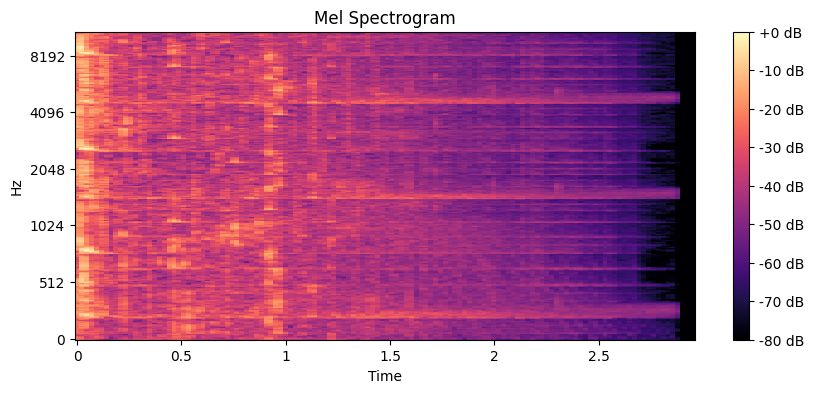
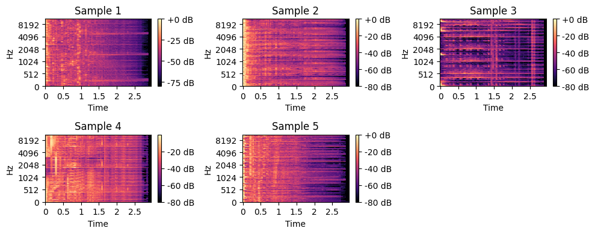

import pandas as pd
import os
# audio analysis
import librosa
# ml
from sklearn.model_selection import train_test_split
from sklearn.ensemble import RandomForestClassifier
from sklearn.metrics import accuracy_score, classification_report
from sklearn.preprocessing import LabelEncoder
from xgboost import XGBClassifier
from tensorflow.keras.models import Sequential
from tensorflow.keras.layers import Conv1D, GlobalAveragePooling1D, Dense
from tensorflow.keras.preprocessing.sequence import pad_sequences
# displaying spectrograms
import matplotlib.pyplot as plt
import librosa.display
Importing the dataset from Kaggle ##
This dataset contains 2500 wav files, 500 each for 5 different moods.The dataset is from kaggle.
#!pip install kaggleRequirement already satisfied: kaggle in /usr/local/lib/python3.10/dist-packages (1.6.17)
Requirement already satisfied: six>=1.10 in /usr/local/lib/python3.10/dist-packages (from kaggle) (1.16.0)
Requirement already satisfied: certifi>=2023.7.22 in /usr/local/lib/python3.10/dist-packages (from kaggle) (2024.8.30)
Requirement already satisfied: python-dateutil in /usr/local/lib/python3.10/dist-packages (from kaggle) (2.8.2)
Requirement already satisfied: requests in /usr/local/lib/python3.10/dist-packages (from kaggle) (2.32.3)
Requirement already satisfied: tqdm in /usr/local/lib/python3.10/dist-packages (from kaggle) (4.66.6)
Requirement already satisfied: python-slugify in /usr/local/lib/python3.10/dist-packages (from kaggle) (8.0.4)
Requirement already satisfied: urllib3 in /usr/local/lib/python3.10/dist-packages (from kaggle) (2.2.3)
Requirement already satisfied: bleach in /usr/local/lib/python3.10/dist-packages (from kaggle) (6.2.0)
Requirement already satisfied: webencodings in /usr/local/lib/python3.10/dist-packages (from bleach->kaggle) (0.5.1)
Requirement already satisfied: text-unidecode>=1.3 in /usr/local/lib/python3.10/dist-packages (from python-slugify->kaggle) (1.3)
Requirement already satisfied: charset-normalizer<4,>=2 in /usr/local/lib/python3.10/dist-packages (from requests->kaggle) (3.4.0)
Requirement already satisfied: idna<4,>=2.5 in /usr/local/lib/python3.10/dist-packages (from requests->kaggle) (3.10)!kaggle datasets download -d auliayasmin/music-mood-classificationDataset URL: https://www.kaggle.com/datasets/auliayasmin/music-mood-classification
License(s): unknown
Downloading music-mood-classification.zip to /content
100% 1.94G/1.95G [00:28<00:00, 99.4MB/s]
100% 1.95G/1.95G [00:28<00:00, 72.2MB/s]!unzip music-mood-classification.zipArchive: music-mood-classification.zip
inflating: dataset/aggressive/6761.wav
inflating: dataset/aggressive/6762.wav
inflating: dataset/aggressive/6763.wav
inflating: dataset/aggressive/6764.wav
inflating: dataset/aggressive/6765.wav
inflating: dataset/aggressive/6766.wav
inflating: dataset/aggressive/6767.wav
inflating: dataset/aggressive/6768.wav
inflating: dataset/aggressive/6769.wav
inflating: dataset/aggressive/6770.wav
inflating: dataset/aggressive/6771.wav
inflating: dataset/aggressive/6772.wav
inflating: dataset/aggressive/6773.wav
inflating: dataset/aggressive/6774.wav
inflating: dataset/aggressive/6775.wav
inflating: dataset/aggressive/6776.wav
inflating: dataset/aggressive/6777.wav
inflating: dataset/aggressive/6778.wav
inflating: dataset/aggressive/6799.wav
inflating: dataset/aggressive/6800.wav
inflating: dataset/aggressive/6801.wav
inflating: dataset/aggressive/6802.wav
inflating: dataset/aggressive/6803.wav
inflating: dataset/aggressive/6804.wav
inflating: dataset/aggressive/6805.wav
inflating: dataset/aggressive/6806.wav
inflating: dataset/aggressive/6807.wav
inflating: dataset/aggressive/6808.wav
inflating: dataset/aggressive/6809.wav
inflating: dataset/aggressive/6810.wav
inflating: dataset/aggressive/6811.wav
inflating: dataset/aggressive/6812.wav
inflating: dataset/aggressive/6813.wav
inflating: dataset/aggressive/6814.wav
inflating: dataset/aggressive/6815.wav
inflating: dataset/aggressive/6816.wav
inflating: dataset/aggressive/6817.wav
inflating: dataset/aggressive/6818.wav
inflating: dataset/aggressive/6819.wav
inflating: dataset/aggressive/6820.wav
inflating: dataset/aggressive/6821.wav
inflating: dataset/aggressive/6822.wav
inflating: dataset/aggressive/6823.wav
inflating: dataset/aggressive/6824.wav
inflating: dataset/aggressive/6825.wav
inflating: dataset/aggressive/6826.wav
inflating: dataset/aggressive/6827.wav
inflating: dataset/aggressive/6828.wav
inflating: dataset/aggressive/6829.wav
inflating: dataset/aggressive/6830.wav
inflating: dataset/aggressive/6831.wav
inflating: dataset/aggressive/6832.wav
inflating: dataset/aggressive/6833.wav
inflating: dataset/aggressive/6834.wav
inflating: dataset/aggressive/6835.wav
inflating: dataset/aggressive/6836.wav
inflating: dataset/aggressive/6837.wav
inflating: dataset/aggressive/6838.wav
inflating: dataset/aggressive/6839.wav
inflating: dataset/aggressive/6840.wav
inflating: dataset/aggressive/6841.wav
inflating: dataset/aggressive/6842.wav
inflating: dataset/aggressive/6843.wav
inflating: dataset/aggressive/6844.wav
inflating: dataset/aggressive/6845.wav
inflating: dataset/aggressive/6846.wav
inflating: dataset/aggressive/6847.wav
inflating: dataset/aggressive/6848.wav
inflating: dataset/aggressive/6849.wav
inflating: dataset/aggressive/6850.wav
inflating: dataset/aggressive/6851.wav
inflating: dataset/aggressive/6852.wav
inflating: dataset/aggressive/6853.wav
inflating: dataset/aggressive/6854.wav
inflating: dataset/aggressive/6855.wav
inflating: dataset/aggressive/6856.wav
inflating: dataset/aggressive/6857.wav
inflating: dataset/aggressive/6858.wav
inflating: dataset/aggressive/6859.wav
inflating: dataset/aggressive/6860.wav
inflating: dataset/aggressive/6861.wav
inflating: dataset/aggressive/6862.wav
inflating: dataset/aggressive/6863.wav
inflating: dataset/aggressive/6864.wav
inflating: dataset/aggressive/6865.wav
inflating: dataset/aggressive/6866.wav
inflating: dataset/aggressive/6867.wav
inflating: dataset/aggressive/6868.wav
inflating: dataset/aggressive/6869.wav
inflating: dataset/aggressive/6870.wav
inflating: dataset/aggressive/6871.wav
inflating: dataset/aggressive/6872.wav
inflating: dataset/aggressive/6873.wav
inflating: dataset/aggressive/6874.wav
inflating: dataset/aggressive/6875.wav
inflating: dataset/aggressive/6876.wav
inflating: dataset/aggressive/6877.wav
inflating: dataset/aggressive/6878.wav
inflating: dataset/aggressive/6879.wav
inflating: dataset/aggressive/6880.wav
inflating: dataset/aggressive/6881.wav
inflating: dataset/aggressive/6882.wav
inflating: dataset/aggressive/6883.wav
inflating: dataset/aggressive/6884.wav
inflating: dataset/aggressive/6885.wav
inflating: dataset/aggressive/6909.wav
inflating: dataset/aggressive/6910.wav
inflating: dataset/aggressive/6911.wav
inflating: dataset/aggressive/6912.wav
inflating: dataset/aggressive/6913.wav
inflating: dataset/aggressive/6914.wav
inflating: dataset/aggressive/6915.wav
inflating: dataset/aggressive/6916.wav
inflating: dataset/aggressive/6917.wav
inflating: dataset/aggressive/6918.wav
inflating: dataset/aggressive/6919.wav
inflating: dataset/aggressive/6920.wav
inflating: dataset/aggressive/6921.wav
inflating: dataset/aggressive/6922.wav
inflating: dataset/aggressive/6923.wav
inflating: dataset/aggressive/6924.wav
inflating: dataset/aggressive/6925.wav
inflating: dataset/aggressive/6926.wav
inflating: dataset/aggressive/6927.wav
inflating: dataset/aggressive/6928.wav
inflating: dataset/aggressive/6929.wav
inflating: dataset/aggressive/6930.wav
inflating: dataset/aggressive/6931.wav
inflating: dataset/aggressive/6932.wav
inflating: dataset/aggressive/6933.wav
inflating: dataset/aggressive/6934.wav
inflating: dataset/aggressive/6935.wav
inflating: dataset/aggressive/6936.wav
inflating: dataset/aggressive/6937.wav
inflating: dataset/aggressive/6938.wav
inflating: dataset/aggressive/6939.wav
inflating: dataset/aggressive/6940.wav
inflating: dataset/aggressive/6941.wav
inflating: dataset/aggressive/6942.wav
inflating: dataset/aggressive/6943.wav
inflating: dataset/aggressive/6944.wav
inflating: dataset/aggressive/6945.wav
inflating: dataset/aggressive/6946.wav
inflating: dataset/aggressive/6947.wav
inflating: dataset/aggressive/6952.wav
inflating: dataset/aggressive/6953.wav
inflating: dataset/aggressive/6954.wav
inflating: dataset/aggressive/6955.wav
inflating: dataset/aggressive/6956.wav
inflating: dataset/aggressive/6957.wav
inflating: dataset/aggressive/6958.wav
inflating: dataset/aggressive/6959.wav
inflating: dataset/aggressive/6960.wav
inflating: dataset/aggressive/6961.wav
inflating: dataset/aggressive/6962.wav
inflating: dataset/aggressive/6963.wav
inflating: dataset/aggressive/6964.wav
inflating: dataset/aggressive/6965.wav
inflating: dataset/aggressive/6966.wav
inflating: dataset/aggressive/6967.wav
inflating: dataset/aggressive/6968.wav
inflating: dataset/aggressive/6969.wav
inflating: dataset/aggressive/6970.wav
inflating: dataset/aggressive/6971.wav
inflating: dataset/aggressive/6972.wav
inflating: dataset/aggressive/6973.wav
inflating: dataset/aggressive/6974.wav
inflating: dataset/aggressive/6975.wav
inflating: dataset/aggressive/6976.wav
inflating: dataset/aggressive/6977.wav
inflating: dataset/aggressive/6978.wav
inflating: dataset/aggressive/6979.wav
inflating: dataset/aggressive/6980.wav
inflating: dataset/aggressive/6981.wav
inflating: dataset/aggressive/6982.wav
inflating: dataset/aggressive/6983.wav
inflating: dataset/aggressive/6984.wav
inflating: dataset/aggressive/6985.wav
inflating: dataset/aggressive/6986.wav
inflating: dataset/aggressive/6987.wav
inflating: dataset/aggressive/6988.wav
inflating: dataset/aggressive/6989.wav
inflating: dataset/aggressive/6990.wav
inflating: dataset/aggressive/6991.wav
inflating: dataset/aggressive/6992.wav
inflating: dataset/aggressive/6993.wav
inflating: dataset/aggressive/6994.wav
inflating: dataset/aggressive/6995.wav
inflating: dataset/aggressive/6996.wav
inflating: dataset/aggressive/6997.wav
inflating: dataset/aggressive/6998.wav
inflating: dataset/aggressive/6999.wav
inflating: dataset/aggressive/7000.wav
inflating: dataset/aggressive/7001.wav
inflating: dataset/aggressive/7002.wav
inflating: dataset/aggressive/7003.wav
inflating: dataset/aggressive/7004.wav
inflating: dataset/aggressive/7005.wav
inflating: dataset/aggressive/7006.wav
inflating: dataset/aggressive/7023.wav
inflating: dataset/aggressive/7024.wav
inflating: dataset/aggressive/7025.wav
inflating: dataset/aggressive/7026.wav
inflating: dataset/aggressive/7027.wav
inflating: dataset/aggressive/7100.wav
inflating: dataset/aggressive/7101.wav
inflating: dataset/aggressive/7102.wav
inflating: dataset/aggressive/7103.wav
inflating: dataset/aggressive/7104.wav
inflating: dataset/aggressive/7105.wav
inflating: dataset/aggressive/7121.wav
inflating: dataset/aggressive/7122.wav
inflating: dataset/aggressive/7123.wav
inflating: dataset/aggressive/7124.wav
inflating: dataset/aggressive/7125.wav
inflating: dataset/aggressive/7126.wav
inflating: dataset/aggressive/7127.wav
inflating: dataset/aggressive/7128.wav
inflating: dataset/aggressive/7129.wav
inflating: dataset/aggressive/7130.wav
inflating: dataset/aggressive/7131.wav
inflating: dataset/aggressive/7132.wav
inflating: dataset/aggressive/7133.wav
inflating: dataset/aggressive/7134.wav
inflating: dataset/aggressive/7135.wav
inflating: dataset/aggressive/7136.wav
inflating: dataset/aggressive/7137.wav
inflating: dataset/aggressive/7138.wav
inflating: dataset/aggressive/7139.wav
inflating: dataset/aggressive/7140.wav
inflating: dataset/aggressive/7141.wav
inflating: dataset/aggressive/7142.wav
inflating: dataset/aggressive/7143.wav
inflating: dataset/aggressive/7144.wav
inflating: dataset/aggressive/7145.wav
inflating: dataset/aggressive/7146.wav
inflating: dataset/aggressive/7147.wav
inflating: dataset/aggressive/7148.wav
inflating: dataset/aggressive/7149.wav
inflating: dataset/aggressive/7150.wav
inflating: dataset/aggressive/7151.wav
inflating: dataset/aggressive/7152.wav
inflating: dataset/aggressive/7153.wav
inflating: dataset/aggressive/7154.wav
inflating: dataset/aggressive/7155.wav
inflating: dataset/aggressive/7156.wav
inflating: dataset/aggressive/7157.wav
inflating: dataset/aggressive/7158.wav
inflating: dataset/aggressive/7159.wav
inflating: dataset/aggressive/7160.wav
inflating: dataset/aggressive/7161.wav
inflating: dataset/aggressive/7162.wav
inflating: dataset/aggressive/7163.wav
inflating: dataset/aggressive/7164.wav
inflating: dataset/aggressive/7165.wav
inflating: dataset/aggressive/7166.wav
inflating: dataset/aggressive/7167.wav
inflating: dataset/aggressive/7168.wav
inflating: dataset/aggressive/7169.wav
inflating: dataset/aggressive/7170.wav
inflating: dataset/aggressive/7171.wav
inflating: dataset/aggressive/7172.wav
inflating: dataset/aggressive/7173.wav
inflating: dataset/aggressive/7174.wav
inflating: dataset/aggressive/7175.wav
inflating: dataset/aggressive/7176.wav
inflating: dataset/aggressive/7177.wav
inflating: dataset/aggressive/7178.wav
inflating: dataset/aggressive/7179.wav
inflating: dataset/aggressive/7180.wav
inflating: dataset/aggressive/7181.wav
inflating: dataset/aggressive/7182.wav
inflating: dataset/aggressive/7183.wav
inflating: dataset/aggressive/7184.wav
inflating: dataset/aggressive/7185.wav
inflating: dataset/aggressive/7186.wav
inflating: dataset/aggressive/7187.wav
inflating: dataset/aggressive/7188.wav
inflating: dataset/aggressive/7189.wav
inflating: dataset/aggressive/7190.wav
inflating: dataset/aggressive/7191.wav
inflating: dataset/aggressive/7192.wav
inflating: dataset/aggressive/7193.wav
inflating: dataset/aggressive/7194.wav
inflating: dataset/aggressive/7195.wav
inflating: dataset/aggressive/7196.wav
inflating: dataset/aggressive/7197.wav
inflating: dataset/aggressive/7198.wav
inflating: dataset/aggressive/7199.wav
inflating: dataset/aggressive/7200.wav
inflating: dataset/aggressive/7201.wav
inflating: dataset/aggressive/7202.wav
inflating: dataset/aggressive/7203.wav
inflating: dataset/aggressive/7204.wav
inflating: dataset/aggressive/7205.wav
inflating: dataset/aggressive/7206.wav
inflating: dataset/aggressive/7207.wav
inflating: dataset/aggressive/7208.wav
inflating: dataset/aggressive/7209.wav
inflating: dataset/aggressive/7210.wav
inflating: dataset/aggressive/7211.wav
inflating: dataset/aggressive/7212.wav
inflating: dataset/aggressive/7213.wav
inflating: dataset/aggressive/7214.wav
inflating: dataset/aggressive/7215.wav
inflating: dataset/aggressive/7216.wav
inflating: dataset/aggressive/7217.wav
inflating: dataset/aggressive/7218.wav
inflating: dataset/aggressive/7219.wav
inflating: dataset/aggressive/7220.wav
inflating: dataset/aggressive/7221.wav
inflating: dataset/aggressive/7222.wav
inflating: dataset/aggressive/7223.wav
inflating: dataset/aggressive/7224.wav
inflating: dataset/aggressive/7225.wav
inflating: dataset/aggressive/7226.wav
inflating: dataset/aggressive/7331.wav
inflating: dataset/aggressive/7332.wav
inflating: dataset/aggressive/7333.wav
inflating: dataset/aggressive/7334.wav
inflating: dataset/aggressive/7335.wav
inflating: dataset/aggressive/7336.wav
inflating: dataset/aggressive/7337.wav
inflating: dataset/aggressive/7338.wav
inflating: dataset/aggressive/7339.wav
inflating: dataset/aggressive/7340.wav
inflating: dataset/aggressive/7341.wav
inflating: dataset/aggressive/7342.wav
inflating: dataset/aggressive/7343.wav
inflating: dataset/aggressive/7344.wav
inflating: dataset/aggressive/7345.wav
inflating: dataset/aggressive/7346.wav
inflating: dataset/aggressive/7347.wav
inflating: dataset/aggressive/7348.wav
inflating: dataset/aggressive/7349.wav
inflating: dataset/aggressive/7350.wav
inflating: dataset/aggressive/7351.wav
inflating: dataset/aggressive/7373.wav
inflating: dataset/aggressive/7374.wav
inflating: dataset/aggressive/7375.wav
inflating: dataset/aggressive/7376.wav
inflating: dataset/aggressive/7377.wav
inflating: dataset/aggressive/7378.wav
inflating: dataset/aggressive/7379.wav
inflating: dataset/aggressive/7380.wav
inflating: dataset/aggressive/7381.wav
inflating: dataset/aggressive/7382.wav
inflating: dataset/aggressive/7383.wav
inflating: dataset/aggressive/7384.wav
inflating: dataset/aggressive/7385.wav
inflating: dataset/aggressive/7386.wav
inflating: dataset/aggressive/7387.wav
inflating: dataset/aggressive/7388.wav
inflating: dataset/aggressive/7389.wav
inflating: dataset/aggressive/7390.wav
inflating: dataset/aggressive/7391.wav
inflating: dataset/aggressive/7392.wav
inflating: dataset/aggressive/7393.wav
inflating: dataset/aggressive/7394.wav
inflating: dataset/aggressive/7395.wav
inflating: dataset/aggressive/7396.wav
inflating: dataset/aggressive/7397.wav
inflating: dataset/aggressive/7398.wav
inflating: dataset/aggressive/7399.wav
inflating: dataset/aggressive/7475.wav
inflating: dataset/aggressive/7476.wav
inflating: dataset/aggressive/7477.wav
inflating: dataset/aggressive/7478.wav
inflating: dataset/aggressive/7479.wav
inflating: dataset/aggressive/7480.wav
inflating: dataset/aggressive/7481.wav
inflating: dataset/aggressive/7482.wav
inflating: dataset/aggressive/7483.wav
inflating: dataset/aggressive/7484.wav
inflating: dataset/aggressive/7485.wav
inflating: dataset/aggressive/7486.wav
inflating: dataset/aggressive/7487.wav
inflating: dataset/aggressive/7488.wav
inflating: dataset/aggressive/7489.wav
inflating: dataset/aggressive/7490.wav
inflating: dataset/aggressive/7491.wav
inflating: dataset/aggressive/7492.wav
inflating: dataset/aggressive/7493.wav
inflating: dataset/aggressive/7507.wav
inflating: dataset/aggressive/7508.wav
inflating: dataset/aggressive/7509.wav
inflating: dataset/aggressive/7510.wav
inflating: dataset/aggressive/7511.wav
inflating: dataset/aggressive/7512.wav
inflating: dataset/aggressive/7513.wav
inflating: dataset/aggressive/7514.wav
inflating: dataset/aggressive/7515.wav
inflating: dataset/aggressive/7516.wav
inflating: dataset/aggressive/7657.wav
inflating: dataset/aggressive/7658.wav
inflating: dataset/aggressive/7659.wav
inflating: dataset/aggressive/7660.wav
inflating: dataset/aggressive/7661.wav
inflating: dataset/aggressive/7662.wav
inflating: dataset/aggressive/7663.wav
inflating: dataset/aggressive/7664.wav
inflating: dataset/aggressive/7665.wav
inflating: dataset/aggressive/7666.wav
inflating: dataset/aggressive/7667.wav
inflating: dataset/aggressive/7668.wav
inflating: dataset/aggressive/7669.wav
inflating: dataset/aggressive/7670.wav
inflating: dataset/aggressive/7671.wav
inflating: dataset/aggressive/7672.wav
inflating: dataset/aggressive/7673.wav
inflating: dataset/aggressive/7681.wav
inflating: dataset/aggressive/7682.wav
inflating: dataset/aggressive/7683.wav
inflating: dataset/aggressive/7684.wav
inflating: dataset/aggressive/7685.wav
inflating: dataset/aggressive/7686.wav
inflating: dataset/aggressive/7687.wav
inflating: dataset/aggressive/7694.wav
inflating: dataset/aggressive/7695.wav
inflating: dataset/aggressive/7696.wav
inflating: dataset/aggressive/7697.wav
inflating: dataset/aggressive/7698.wav
inflating: dataset/aggressive/7699.wav
inflating: dataset/aggressive/7700.wav
inflating: dataset/aggressive/7701.wav
inflating: dataset/aggressive/7702.wav
inflating: dataset/aggressive/7703.wav
inflating: dataset/aggressive/7704.wav
inflating: dataset/aggressive/7705.wav
inflating: dataset/aggressive/7706.wav
inflating: dataset/aggressive/7707.wav
inflating: dataset/aggressive/7708.wav
inflating: dataset/aggressive/7709.wav
inflating: dataset/aggressive/7710.wav
inflating: dataset/aggressive/7711.wav
inflating: dataset/aggressive/7712.wav
inflating: dataset/aggressive/7713.wav
inflating: dataset/aggressive/7778.wav
inflating: dataset/aggressive/7779.wav
inflating: dataset/aggressive/7780.wav
inflating: dataset/aggressive/7781.wav
inflating: dataset/aggressive/7782.wav
inflating: dataset/aggressive/7783.wav
inflating: dataset/aggressive/7784.wav
inflating: dataset/aggressive/7785.wav
inflating: dataset/aggressive/7786.wav
inflating: dataset/aggressive/7787.wav
inflating: dataset/aggressive/7788.wav
inflating: dataset/aggressive/7789.wav
inflating: dataset/aggressive/7790.wav
inflating: dataset/aggressive/7791.wav
inflating: dataset/aggressive/7792.wav
inflating: dataset/aggressive/7793.wav
inflating: dataset/aggressive/7794.wav
inflating: dataset/aggressive/7795.wav
inflating: dataset/aggressive/7796.wav
inflating: dataset/aggressive/7797.wav
inflating: dataset/aggressive/7798.wav
inflating: dataset/aggressive/7799.wav
inflating: dataset/aggressive/7860.wav
inflating: dataset/aggressive/7861.wav
inflating: dataset/aggressive/7862.wav
inflating: dataset/aggressive/7863.wav
inflating: dataset/aggressive/7864.wav
inflating: dataset/aggressive/7865.wav
inflating: dataset/aggressive/7866.wav
inflating: dataset/aggressive/7867.wav
inflating: dataset/aggressive/7868.wav
inflating: dataset/aggressive/7869.wav
inflating: dataset/aggressive/7870.wav
inflating: dataset/aggressive/7871.wav
inflating: dataset/aggressive/7872.wav
inflating: dataset/aggressive/7873.wav
inflating: dataset/aggressive/7874.wav
inflating: dataset/aggressive/7875.wav
inflating: dataset/aggressive/7876.wav
inflating: dataset/aggressive/7877.wav
inflating: dataset/aggressive/7878.wav
inflating: dataset/aggressive/7879.wav
inflating: dataset/aggressive/7880.wav
inflating: dataset/aggressive/7881.wav
inflating: dataset/aggressive/7882.wav
inflating: dataset/aggressive/7883.wav
inflating: dataset/aggressive/7884.wav
inflating: dataset/aggressive/7885.wav
inflating: dataset/aggressive/7886.wav
inflating: dataset/aggressive/7887.wav
inflating: dataset/aggressive/7888.wav
inflating: dataset/aggressive/7889.wav
inflating: dataset/aggressive/7890.wav
inflating: dataset/aggressive/7891.wav
inflating: dataset/aggressive/7892.wav
inflating: dataset/aggressive/7893.wav
inflating: dataset/aggressive/7894.wav
inflating: dataset/aggressive/7895.wav
inflating: dataset/aggressive/7896.wav
inflating: dataset/aggressive/7897.wav
inflating: dataset/aggressive/7898.wav
inflating: dataset/aggressive/7899.wav
inflating: dataset/aggressive/7900.wav
inflating: dataset/dramatic/14383.wav
inflating: dataset/dramatic/14384.wav
inflating: dataset/dramatic/14385.wav
inflating: dataset/dramatic/14386.wav
inflating: dataset/dramatic/14387.wav
inflating: dataset/dramatic/14388.wav
inflating: dataset/dramatic/14389.wav
inflating: dataset/dramatic/14390.wav
inflating: dataset/dramatic/14391.wav
inflating: dataset/dramatic/14392.wav
inflating: dataset/dramatic/14393.wav
inflating: dataset/dramatic/14394.wav
inflating: dataset/dramatic/14395.wav
inflating: dataset/dramatic/14396.wav
inflating: dataset/dramatic/14397.wav
inflating: dataset/dramatic/14398.wav
inflating: dataset/dramatic/14399.wav
inflating: dataset/dramatic/14400.wav
inflating: dataset/dramatic/14401.wav
inflating: dataset/dramatic/14402.wav
inflating: dataset/dramatic/14403.wav
inflating: dataset/dramatic/14404.wav
inflating: dataset/dramatic/14405.wav
inflating: dataset/dramatic/14406.wav
inflating: dataset/dramatic/14407.wav
inflating: dataset/dramatic/14408.wav
inflating: dataset/dramatic/14409.wav
inflating: dataset/dramatic/14410.wav
inflating: dataset/dramatic/14411.wav
inflating: dataset/dramatic/14431.wav
inflating: dataset/dramatic/14432.wav
inflating: dataset/dramatic/14433.wav
inflating: dataset/dramatic/14434.wav
inflating: dataset/dramatic/14435.wav
inflating: dataset/dramatic/14436.wav
inflating: dataset/dramatic/14437.wav
inflating: dataset/dramatic/14438.wav
inflating: dataset/dramatic/14439.wav
inflating: dataset/dramatic/14440.wav
inflating: dataset/dramatic/14441.wav
inflating: dataset/dramatic/14442.wav
inflating: dataset/dramatic/14443.wav
inflating: dataset/dramatic/14444.wav
inflating: dataset/dramatic/14445.wav
inflating: dataset/dramatic/14446.wav
inflating: dataset/dramatic/14447.wav
inflating: dataset/dramatic/14448.wav
inflating: dataset/dramatic/14449.wav
inflating: dataset/dramatic/14450.wav
inflating: dataset/dramatic/14451.wav
inflating: dataset/dramatic/14452.wav
inflating: dataset/dramatic/14453.wav
inflating: dataset/dramatic/14454.wav
inflating: dataset/dramatic/14455.wav
inflating: dataset/dramatic/14456.wav
inflating: dataset/dramatic/14457.wav
inflating: dataset/dramatic/14477.wav
inflating: dataset/dramatic/14478.wav
inflating: dataset/dramatic/14479.wav
inflating: dataset/dramatic/14480.wav
inflating: dataset/dramatic/14481.wav
inflating: dataset/dramatic/14482.wav
inflating: dataset/dramatic/14483.wav
inflating: dataset/dramatic/14484.wav
inflating: dataset/dramatic/14485.wav
inflating: dataset/dramatic/14486.wav
inflating: dataset/dramatic/14487.wav
inflating: dataset/dramatic/14488.wav
inflating: dataset/dramatic/14489.wav
inflating: dataset/dramatic/14490.wav
inflating: dataset/dramatic/14521.wav
inflating: dataset/dramatic/14522.wav
inflating: dataset/dramatic/14523.wav
inflating: dataset/dramatic/14524.wav
inflating: dataset/dramatic/14525.wav
inflating: dataset/dramatic/14526.wav
inflating: dataset/dramatic/14527.wav
inflating: dataset/dramatic/14528.wav
inflating: dataset/dramatic/14529.wav
inflating: dataset/dramatic/14530.wav
inflating: dataset/dramatic/14531.wav
inflating: dataset/dramatic/14532.wav
inflating: dataset/dramatic/14533.wav
inflating: dataset/dramatic/14534.wav
inflating: dataset/dramatic/14535.wav
inflating: dataset/dramatic/14536.wav
inflating: dataset/dramatic/14537.wav
inflating: dataset/dramatic/14538.wav
inflating: dataset/dramatic/14539.wav
inflating: dataset/dramatic/14540.wav
inflating: dataset/dramatic/14560.wav
inflating: dataset/dramatic/14561.wav
inflating: dataset/dramatic/14562.wav
inflating: dataset/dramatic/14563.wav
inflating: dataset/dramatic/14564.wav
inflating: dataset/dramatic/14565.wav
inflating: dataset/dramatic/14566.wav
inflating: dataset/dramatic/14567.wav
inflating: dataset/dramatic/14568.wav
inflating: dataset/dramatic/14569.wav
inflating: dataset/dramatic/14570.wav
inflating: dataset/dramatic/14571.wav
inflating: dataset/dramatic/14572.wav
inflating: dataset/dramatic/14573.wav
inflating: dataset/dramatic/14574.wav
inflating: dataset/dramatic/14575.wav
inflating: dataset/dramatic/14576.wav
inflating: dataset/dramatic/14577.wav
inflating: dataset/dramatic/14578.wav
inflating: dataset/dramatic/14579.wav
inflating: dataset/dramatic/14580.wav
inflating: dataset/dramatic/14581.wav
inflating: dataset/dramatic/14582.wav
inflating: dataset/dramatic/14583.wav
inflating: dataset/dramatic/14584.wav
inflating: dataset/dramatic/14585.wav
inflating: dataset/dramatic/14586.wav
inflating: dataset/dramatic/14587.wav
inflating: dataset/dramatic/14588.wav
inflating: dataset/dramatic/14589.wav
inflating: dataset/dramatic/14590.wav
inflating: dataset/dramatic/14591.wav
inflating: dataset/dramatic/14592.wav
inflating: dataset/dramatic/14593.wav
inflating: dataset/dramatic/14594.wav
inflating: dataset/dramatic/14595.wav
inflating: dataset/dramatic/14596.wav
inflating: dataset/dramatic/14597.wav
inflating: dataset/dramatic/14629.wav
inflating: dataset/dramatic/14630.wav
inflating: dataset/dramatic/14631.wav
inflating: dataset/dramatic/14632.wav
inflating: dataset/dramatic/14633.wav
inflating: dataset/dramatic/14634.wav
inflating: dataset/dramatic/14635.wav
inflating: dataset/dramatic/14636.wav
inflating: dataset/dramatic/14637.wav
inflating: dataset/dramatic/14638.wav
inflating: dataset/dramatic/14639.wav
inflating: dataset/dramatic/14640.wav
inflating: dataset/dramatic/14641.wav
inflating: dataset/dramatic/14660.wav
inflating: dataset/dramatic/14661.wav
inflating: dataset/dramatic/14662.wav
inflating: dataset/dramatic/14663.wav
inflating: dataset/dramatic/14664.wav
inflating: dataset/dramatic/14665.wav
inflating: dataset/dramatic/14680.wav
inflating: dataset/dramatic/14681.wav
inflating: dataset/dramatic/14682.wav
inflating: dataset/dramatic/14683.wav
inflating: dataset/dramatic/14684.wav
inflating: dataset/dramatic/14685.wav
inflating: dataset/dramatic/14686.wav
inflating: dataset/dramatic/14687.wav
inflating: dataset/dramatic/14688.wav
inflating: dataset/dramatic/14689.wav
inflating: dataset/dramatic/14690.wav
inflating: dataset/dramatic/14691.wav
inflating: dataset/dramatic/14692.wav
inflating: dataset/dramatic/14693.wav
inflating: dataset/dramatic/14694.wav
inflating: dataset/dramatic/14695.wav
inflating: dataset/dramatic/14696.wav
inflating: dataset/dramatic/14697.wav
inflating: dataset/dramatic/14698.wav
inflating: dataset/dramatic/14761.wav
inflating: dataset/dramatic/14762.wav
inflating: dataset/dramatic/14763.wav
inflating: dataset/dramatic/14764.wav
inflating: dataset/dramatic/14765.wav
inflating: dataset/dramatic/14766.wav
inflating: dataset/dramatic/14767.wav
inflating: dataset/dramatic/14768.wav
inflating: dataset/dramatic/14775.wav
inflating: dataset/dramatic/14776.wav
inflating: dataset/dramatic/14777.wav
inflating: dataset/dramatic/14778.wav
inflating: dataset/dramatic/14779.wav
inflating: dataset/dramatic/14780.wav
inflating: dataset/dramatic/14781.wav
inflating: dataset/dramatic/14782.wav
inflating: dataset/dramatic/14783.wav
inflating: dataset/dramatic/14784.wav
inflating: dataset/dramatic/14785.wav
inflating: dataset/dramatic/14786.wav
inflating: dataset/dramatic/14787.wav
inflating: dataset/dramatic/14788.wav
inflating: dataset/dramatic/14821.wav
inflating: dataset/dramatic/14822.wav
inflating: dataset/dramatic/14823.wav
inflating: dataset/dramatic/14824.wav
inflating: dataset/dramatic/14825.wav
inflating: dataset/dramatic/14826.wav
inflating: dataset/dramatic/14827.wav
inflating: dataset/dramatic/14828.wav
inflating: dataset/dramatic/14829.wav
inflating: dataset/dramatic/14830.wav
inflating: dataset/dramatic/14831.wav
inflating: dataset/dramatic/14832.wav
inflating: dataset/dramatic/14833.wav
inflating: dataset/dramatic/14834.wav
inflating: dataset/dramatic/14835.wav
inflating: dataset/dramatic/14836.wav
inflating: dataset/dramatic/14837.wav
inflating: dataset/dramatic/14838.wav
inflating: dataset/dramatic/14839.wav
inflating: dataset/dramatic/14840.wav
inflating: dataset/dramatic/14880.wav
inflating: dataset/dramatic/14881.wav
inflating: dataset/dramatic/14882.wav
inflating: dataset/dramatic/14883.wav
inflating: dataset/dramatic/14884.wav
inflating: dataset/dramatic/14885.wav
inflating: dataset/dramatic/14886.wav
inflating: dataset/dramatic/14887.wav
inflating: dataset/dramatic/14888.wav
inflating: dataset/dramatic/14889.wav
inflating: dataset/dramatic/14890.wav
inflating: dataset/dramatic/14891.wav
inflating: dataset/dramatic/14892.wav
inflating: dataset/dramatic/14893.wav
inflating: dataset/dramatic/14894.wav
inflating: dataset/dramatic/14895.wav
inflating: dataset/dramatic/14896.wav
inflating: dataset/dramatic/14897.wav
inflating: dataset/dramatic/14898.wav
inflating: dataset/dramatic/14899.wav
inflating: dataset/dramatic/14900.wav
inflating: dataset/dramatic/14901.wav
inflating: dataset/dramatic/14902.wav
inflating: dataset/dramatic/14903.wav
inflating: dataset/dramatic/14904.wav
inflating: dataset/dramatic/14905.wav
inflating: dataset/dramatic/14906.wav
inflating: dataset/dramatic/14907.wav
inflating: dataset/dramatic/14908.wav
inflating: dataset/dramatic/14909.wav
inflating: dataset/dramatic/14910.wav
inflating: dataset/dramatic/14911.wav
inflating: dataset/dramatic/14912.wav
inflating: dataset/dramatic/14913.wav
inflating: dataset/dramatic/14914.wav
inflating: dataset/dramatic/14915.wav
inflating: dataset/dramatic/14916.wav
inflating: dataset/dramatic/14917.wav
inflating: dataset/dramatic/14918.wav
inflating: dataset/dramatic/14919.wav
inflating: dataset/dramatic/14920.wav
inflating: dataset/dramatic/14921.wav
inflating: dataset/dramatic/14922.wav
inflating: dataset/dramatic/14978.wav
inflating: dataset/dramatic/14979.wav
inflating: dataset/dramatic/14980.wav
inflating: dataset/dramatic/14981.wav
inflating: dataset/dramatic/14982.wav
inflating: dataset/dramatic/14983.wav
inflating: dataset/dramatic/14984.wav
inflating: dataset/dramatic/14985.wav
inflating: dataset/dramatic/14986.wav
inflating: dataset/dramatic/14987.wav
inflating: dataset/dramatic/14988.wav
inflating: dataset/dramatic/14989.wav
inflating: dataset/dramatic/14990.wav
inflating: dataset/dramatic/14991.wav
inflating: dataset/dramatic/14992.wav
inflating: dataset/dramatic/14993.wav
inflating: dataset/dramatic/14994.wav
inflating: dataset/dramatic/14995.wav
inflating: dataset/dramatic/14996.wav
inflating: dataset/dramatic/14997.wav
inflating: dataset/dramatic/14998.wav
inflating: dataset/dramatic/14999.wav
inflating: dataset/dramatic/15000.wav
inflating: dataset/dramatic/15001.wav
inflating: dataset/dramatic/15002.wav
inflating: dataset/dramatic/15003.wav
inflating: dataset/dramatic/15004.wav
inflating: dataset/dramatic/15005.wav
inflating: dataset/dramatic/15006.wav
inflating: dataset/dramatic/15065.wav
inflating: dataset/dramatic/15066.wav
inflating: dataset/dramatic/15067.wav
inflating: dataset/dramatic/15068.wav
inflating: dataset/dramatic/15069.wav
inflating: dataset/dramatic/15070.wav
inflating: dataset/dramatic/15071.wav
inflating: dataset/dramatic/15072.wav
inflating: dataset/dramatic/15073.wav
inflating: dataset/dramatic/15074.wav
inflating: dataset/dramatic/15075.wav
inflating: dataset/dramatic/15076.wav
inflating: dataset/dramatic/15077.wav
inflating: dataset/dramatic/15078.wav
inflating: dataset/dramatic/15079.wav
inflating: dataset/dramatic/15080.wav
inflating: dataset/dramatic/15081.wav
inflating: dataset/dramatic/15082.wav
inflating: dataset/dramatic/15083.wav
inflating: dataset/dramatic/15115.wav
inflating: dataset/dramatic/15116.wav
inflating: dataset/dramatic/15117.wav
inflating: dataset/dramatic/15118.wav
inflating: dataset/dramatic/15119.wav
inflating: dataset/dramatic/18650.wav
inflating: dataset/dramatic/18651.wav
inflating: dataset/dramatic/18652.wav
inflating: dataset/dramatic/18653.wav
inflating: dataset/dramatic/18654.wav
inflating: dataset/dramatic/18655.wav
inflating: dataset/dramatic/18656.wav
inflating: dataset/dramatic/18657.wav
inflating: dataset/dramatic/18658.wav
inflating: dataset/dramatic/18659.wav
inflating: dataset/dramatic/18660.wav
inflating: dataset/dramatic/18661.wav
inflating: dataset/dramatic/18662.wav
inflating: dataset/dramatic/18663.wav
inflating: dataset/dramatic/18664.wav
inflating: dataset/dramatic/18665.wav
inflating: dataset/dramatic/18713.wav
inflating: dataset/dramatic/18714.wav
inflating: dataset/dramatic/18715.wav
inflating: dataset/dramatic/18716.wav
inflating: dataset/dramatic/18717.wav
inflating: dataset/dramatic/18718.wav
inflating: dataset/dramatic/18719.wav
inflating: dataset/dramatic/18720.wav
inflating: dataset/dramatic/18721.wav
inflating: dataset/dramatic/18722.wav
inflating: dataset/dramatic/18723.wav
inflating: dataset/dramatic/18724.wav
inflating: dataset/dramatic/18725.wav
inflating: dataset/dramatic/18726.wav
inflating: dataset/dramatic/18727.wav
inflating: dataset/dramatic/18728.wav
inflating: dataset/dramatic/18729.wav
inflating: dataset/dramatic/18730.wav
inflating: dataset/dramatic/18770.wav
inflating: dataset/dramatic/18771.wav
inflating: dataset/dramatic/18772.wav
inflating: dataset/dramatic/18773.wav
inflating: dataset/dramatic/18774.wav
inflating: dataset/dramatic/18775.wav
inflating: dataset/dramatic/18776.wav
inflating: dataset/dramatic/18777.wav
inflating: dataset/dramatic/18778.wav
inflating: dataset/dramatic/18779.wav
inflating: dataset/dramatic/18780.wav
inflating: dataset/dramatic/18781.wav
inflating: dataset/dramatic/18782.wav
inflating: dataset/dramatic/18783.wav
inflating: dataset/dramatic/18784.wav
inflating: dataset/dramatic/18785.wav
inflating: dataset/dramatic/18827.wav
inflating: dataset/dramatic/18828.wav
inflating: dataset/dramatic/18829.wav
inflating: dataset/dramatic/18830.wav
inflating: dataset/dramatic/18831.wav
inflating: dataset/dramatic/18832.wav
inflating: dataset/dramatic/18833.wav
inflating: dataset/dramatic/18834.wav
inflating: dataset/dramatic/18835.wav
inflating: dataset/dramatic/18836.wav
inflating: dataset/dramatic/18837.wav
inflating: dataset/dramatic/18838.wav
inflating: dataset/dramatic/18839.wav
inflating: dataset/dramatic/18840.wav
inflating: dataset/dramatic/18841.wav
inflating: dataset/dramatic/18842.wav
inflating: dataset/dramatic/18843.wav
inflating: dataset/dramatic/18844.wav
inflating: dataset/dramatic/18845.wav
inflating: dataset/dramatic/18846.wav
inflating: dataset/dramatic/18847.wav
inflating: dataset/dramatic/18848.wav
inflating: dataset/dramatic/18849.wav
inflating: dataset/dramatic/18850.wav
inflating: dataset/dramatic/18851.wav
inflating: dataset/dramatic/18852.wav
inflating: dataset/dramatic/18853.wav
inflating: dataset/dramatic/18854.wav
inflating: dataset/dramatic/18855.wav
inflating: dataset/dramatic/19428.wav
inflating: dataset/dramatic/19429.wav
inflating: dataset/dramatic/19430.wav
inflating: dataset/dramatic/19431.wav
inflating: dataset/dramatic/19432.wav
inflating: dataset/dramatic/19433.wav
inflating: dataset/dramatic/19434.wav
inflating: dataset/dramatic/19435.wav
inflating: dataset/dramatic/19436.wav
inflating: dataset/dramatic/19437.wav
inflating: dataset/dramatic/19438.wav
inflating: dataset/dramatic/19439.wav
inflating: dataset/dramatic/19440.wav
inflating: dataset/dramatic/19441.wav
inflating: dataset/dramatic/9122.wav
inflating: dataset/dramatic/9123.wav
inflating: dataset/dramatic/9124.wav
inflating: dataset/dramatic/9125.wav
inflating: dataset/dramatic/9126.wav
inflating: dataset/dramatic/9127.wav
inflating: dataset/dramatic/9128.wav
inflating: dataset/dramatic/9129.wav
inflating: dataset/dramatic/9130.wav
inflating: dataset/dramatic/9131.wav
inflating: dataset/dramatic/9132.wav
inflating: dataset/dramatic/9133.wav
inflating: dataset/dramatic/9134.wav
inflating: dataset/dramatic/9135.wav
inflating: dataset/dramatic/9136.wav
inflating: dataset/dramatic/9137.wav
inflating: dataset/dramatic/9138.wav
inflating: dataset/dramatic/9139.wav
inflating: dataset/dramatic/9140.wav
inflating: dataset/dramatic/9141.wav
inflating: dataset/dramatic/9142.wav
inflating: dataset/dramatic/9143.wav
inflating: dataset/dramatic/9144.wav
inflating: dataset/dramatic/9145.wav
inflating: dataset/dramatic/9146.wav
inflating: dataset/dramatic/9147.wav
inflating: dataset/dramatic/9148.wav
inflating: dataset/dramatic/9149.wav
inflating: dataset/dramatic/9150.wav
inflating: dataset/dramatic/9151.wav
inflating: dataset/dramatic/9152.wav
inflating: dataset/dramatic/9153.wav
inflating: dataset/dramatic/9154.wav
inflating: dataset/dramatic/9155.wav
inflating: dataset/dramatic/9156.wav
inflating: dataset/dramatic/9157.wav
inflating: dataset/dramatic/9158.wav
inflating: dataset/dramatic/9159.wav
inflating: dataset/dramatic/9160.wav
inflating: dataset/dramatic/9161.wav
inflating: dataset/dramatic/9162.wav
inflating: dataset/dramatic/9163.wav
inflating: dataset/dramatic/9164.wav
inflating: dataset/dramatic/9165.wav
inflating: dataset/dramatic/9166.wav
inflating: dataset/dramatic/9167.wav
inflating: dataset/dramatic/9168.wav
inflating: dataset/dramatic/9169.wav
inflating: dataset/dramatic/9170.wav
inflating: dataset/dramatic/9171.wav
inflating: dataset/dramatic/9172.wav
inflating: dataset/dramatic/9173.wav
inflating: dataset/dramatic/9174.wav
inflating: dataset/dramatic/9175.wav
inflating: dataset/dramatic/9176.wav
inflating: dataset/dramatic/9177.wav
inflating: dataset/dramatic/9178.wav
inflating: dataset/dramatic/9179.wav
inflating: dataset/dramatic/9304.wav
inflating: dataset/dramatic/9305.wav
inflating: dataset/dramatic/9306.wav
inflating: dataset/dramatic/9307.wav
inflating: dataset/dramatic/9308.wav
inflating: dataset/dramatic/9309.wav
inflating: dataset/dramatic/9310.wav
inflating: dataset/dramatic/9311.wav
inflating: dataset/dramatic/9312.wav
inflating: dataset/dramatic/9313.wav
inflating: dataset/dramatic/9314.wav
inflating: dataset/dramatic/9315.wav
inflating: dataset/dramatic/9316.wav
inflating: dataset/dramatic/9317.wav
inflating: dataset/dramatic/9318.wav
inflating: dataset/dramatic/9319.wav
inflating: dataset/dramatic/9320.wav
inflating: dataset/dramatic/9321.wav
inflating: dataset/dramatic/9322.wav
inflating: dataset/dramatic/9323.wav
inflating: dataset/dramatic/9324.wav
inflating: dataset/dramatic/9325.wav
inflating: dataset/dramatic/9326.wav
inflating: dataset/dramatic/9327.wav
inflating: dataset/dramatic/9328.wav
inflating: dataset/dramatic/9329.wav
inflating: dataset/dramatic/9330.wav
inflating: dataset/dramatic/9404.wav
inflating: dataset/dramatic/9405.wav
inflating: dataset/dramatic/9406.wav
inflating: dataset/dramatic/9407.wav
inflating: dataset/dramatic/9408.wav
inflating: dataset/dramatic/9409.wav
inflating: dataset/dramatic/9410.wav
inflating: dataset/dramatic/9411.wav
inflating: dataset/dramatic/9412.wav
inflating: dataset/dramatic/9413.wav
inflating: dataset/dramatic/9414.wav
inflating: dataset/dramatic/9415.wav
inflating: dataset/dramatic/9416.wav
inflating: dataset/dramatic/9417.wav
inflating: dataset/dramatic/9418.wav
inflating: dataset/dramatic/9419.wav
inflating: dataset/dramatic/9420.wav
inflating: dataset/dramatic/9421.wav
inflating: dataset/happy/17881.wav
inflating: dataset/happy/17882.wav
inflating: dataset/happy/17883.wav
inflating: dataset/happy/17884.wav
inflating: dataset/happy/17885.wav
inflating: dataset/happy/17886.wav
inflating: dataset/happy/17887.wav
inflating: dataset/happy/17888.wav
inflating: dataset/happy/17889.wav
inflating: dataset/happy/17890.wav
inflating: dataset/happy/17891.wav
inflating: dataset/happy/17892.wav
inflating: dataset/happy/17893.wav
inflating: dataset/happy/17894.wav
inflating: dataset/happy/17895.wav
inflating: dataset/happy/17896.wav
inflating: dataset/happy/17897.wav
inflating: dataset/happy/17898.wav
inflating: dataset/happy/17899.wav
inflating: dataset/happy/17900.wav
inflating: dataset/happy/17901.wav
inflating: dataset/happy/17902.wav
inflating: dataset/happy/17903.wav
inflating: dataset/happy/17904.wav
inflating: dataset/happy/17905.wav
inflating: dataset/happy/17906.wav
inflating: dataset/happy/17907.wav
inflating: dataset/happy/17908.wav
inflating: dataset/happy/17909.wav
inflating: dataset/happy/17910.wav
inflating: dataset/happy/17911.wav
inflating: dataset/happy/17912.wav
inflating: dataset/happy/17913.wav
inflating: dataset/happy/17914.wav
inflating: dataset/happy/17915.wav
inflating: dataset/happy/17916.wav
inflating: dataset/happy/17917.wav
inflating: dataset/happy/17918.wav
inflating: dataset/happy/17919.wav
inflating: dataset/happy/17920.wav
inflating: dataset/happy/17921.wav
inflating: dataset/happy/17922.wav
inflating: dataset/happy/17923.wav
inflating: dataset/happy/17924.wav
inflating: dataset/happy/17925.wav
inflating: dataset/happy/17926.wav
inflating: dataset/happy/17927.wav
inflating: dataset/happy/17928.wav
inflating: dataset/happy/17929.wav
inflating: dataset/happy/17930.wav
inflating: dataset/happy/17931.wav
inflating: dataset/happy/17932.wav
inflating: dataset/happy/17985.wav
inflating: dataset/happy/17986.wav
inflating: dataset/happy/17987.wav
inflating: dataset/happy/17988.wav
inflating: dataset/happy/17989.wav
inflating: dataset/happy/17990.wav
inflating: dataset/happy/17991.wav
inflating: dataset/happy/17992.wav
inflating: dataset/happy/17993.wav
inflating: dataset/happy/17994.wav
inflating: dataset/happy/17995.wav
inflating: dataset/happy/17996.wav
inflating: dataset/happy/17997.wav
inflating: dataset/happy/17998.wav
inflating: dataset/happy/17999.wav
inflating: dataset/happy/18000.wav
inflating: dataset/happy/18001.wav
inflating: dataset/happy/18045.wav
inflating: dataset/happy/18046.wav
inflating: dataset/happy/18047.wav
inflating: dataset/happy/18048.wav
inflating: dataset/happy/18049.wav
inflating: dataset/happy/18050.wav
inflating: dataset/happy/18051.wav
inflating: dataset/happy/18052.wav
inflating: dataset/happy/18053.wav
inflating: dataset/happy/18054.wav
inflating: dataset/happy/18055.wav
inflating: dataset/happy/18056.wav
inflating: dataset/happy/18057.wav
inflating: dataset/happy/18058.wav
inflating: dataset/happy/18059.wav
inflating: dataset/happy/18060.wav
inflating: dataset/happy/18061.wav
inflating: dataset/happy/18062.wav
inflating: dataset/happy/18063.wav
inflating: dataset/happy/18064.wav
inflating: dataset/happy/18086.wav
inflating: dataset/happy/18087.wav
inflating: dataset/happy/18088.wav
inflating: dataset/happy/18089.wav
inflating: dataset/happy/18090.wav
inflating: dataset/happy/18091.wav
inflating: dataset/happy/18092.wav
inflating: dataset/happy/18093.wav
inflating: dataset/happy/18094.wav
inflating: dataset/happy/18095.wav
inflating: dataset/happy/18096.wav
inflating: dataset/happy/18097.wav
inflating: dataset/happy/18098.wav
inflating: dataset/happy/18099.wav
inflating: dataset/happy/18100.wav
inflating: dataset/happy/18101.wav
inflating: dataset/happy/18102.wav
inflating: dataset/happy/18103.wav
inflating: dataset/happy/18104.wav
inflating: dataset/happy/18105.wav
inflating: dataset/happy/18106.wav
inflating: dataset/happy/18107.wav
inflating: dataset/happy/18108.wav
inflating: dataset/happy/18109.wav
inflating: dataset/happy/18110.wav
inflating: dataset/happy/18111.wav
inflating: dataset/happy/18112.wav
inflating: dataset/happy/18113.wav
inflating: dataset/happy/18179.wav
inflating: dataset/happy/18180.wav
inflating: dataset/happy/18181.wav
inflating: dataset/happy/18182.wav
inflating: dataset/happy/18183.wav
inflating: dataset/happy/18184.wav
inflating: dataset/happy/18185.wav
inflating: dataset/happy/18186.wav
inflating: dataset/happy/18187.wav
inflating: dataset/happy/18188.wav
inflating: dataset/happy/18189.wav
inflating: dataset/happy/18190.wav
inflating: dataset/happy/18191.wav
inflating: dataset/happy/18192.wav
inflating: dataset/happy/18193.wav
inflating: dataset/happy/18194.wav
inflating: dataset/happy/18195.wav
inflating: dataset/happy/18196.wav
inflating: dataset/happy/18197.wav
inflating: dataset/happy/18198.wav
inflating: dataset/happy/18199.wav
inflating: dataset/happy/18323.wav
inflating: dataset/happy/18324.wav
inflating: dataset/happy/18325.wav
inflating: dataset/happy/18326.wav
inflating: dataset/happy/18327.wav
inflating: dataset/happy/18328.wav
inflating: dataset/happy/18329.wav
inflating: dataset/happy/18330.wav
inflating: dataset/happy/18331.wav
inflating: dataset/happy/18332.wav
inflating: dataset/happy/18333.wav
inflating: dataset/happy/18334.wav
inflating: dataset/happy/18335.wav
inflating: dataset/happy/18336.wav
inflating: dataset/happy/18337.wav
inflating: dataset/happy/18338.wav
inflating: dataset/happy/18339.wav
inflating: dataset/happy/18340.wav
inflating: dataset/happy/18341.wav
inflating: dataset/happy/18342.wav
inflating: dataset/happy/18343.wav
inflating: dataset/happy/18344.wav
inflating: dataset/happy/18345.wav
inflating: dataset/happy/18346.wav
inflating: dataset/happy/18347.wav
inflating: dataset/happy/18479.wav
inflating: dataset/happy/18480.wav
inflating: dataset/happy/18481.wav
inflating: dataset/happy/18482.wav
inflating: dataset/happy/18483.wav
inflating: dataset/happy/18484.wav
inflating: dataset/happy/18485.wav
inflating: dataset/happy/18486.wav
inflating: dataset/happy/18487.wav
inflating: dataset/happy/18488.wav
inflating: dataset/happy/18489.wav
inflating: dataset/happy/18490.wav
inflating: dataset/happy/18491.wav
inflating: dataset/happy/18492.wav
inflating: dataset/happy/18493.wav
inflating: dataset/happy/18494.wav
inflating: dataset/happy/18495.wav
inflating: dataset/happy/18496.wav
inflating: dataset/happy/18497.wav
inflating: dataset/happy/18498.wav
inflating: dataset/happy/18499.wav
inflating: dataset/happy/18500.wav
inflating: dataset/happy/18501.wav
inflating: dataset/happy/18502.wav
inflating: dataset/happy/18576.wav
inflating: dataset/happy/18577.wav
inflating: dataset/happy/18578.wav
inflating: dataset/happy/18579.wav
inflating: dataset/happy/18580.wav
inflating: dataset/happy/18581.wav
inflating: dataset/happy/18582.wav
inflating: dataset/happy/18583.wav
inflating: dataset/happy/18584.wav
inflating: dataset/happy/18585.wav
inflating: dataset/happy/18586.wav
inflating: dataset/happy/18587.wav
inflating: dataset/happy/18588.wav
inflating: dataset/happy/18589.wav
inflating: dataset/happy/18590.wav
inflating: dataset/happy/18591.wav
inflating: dataset/happy/18592.wav
inflating: dataset/happy/18593.wav
inflating: dataset/happy/18594.wav
inflating: dataset/happy/18622.wav
inflating: dataset/happy/18623.wav
inflating: dataset/happy/18624.wav
inflating: dataset/happy/18625.wav
inflating: dataset/happy/18626.wav
inflating: dataset/happy/18627.wav
inflating: dataset/happy/18628.wav
inflating: dataset/happy/18629.wav
inflating: dataset/happy/18630.wav
inflating: dataset/happy/18631.wav
inflating: dataset/happy/18632.wav
inflating: dataset/happy/18633.wav
inflating: dataset/happy/18634.wav
inflating: dataset/happy/18635.wav
inflating: dataset/happy/18636.wav
inflating: dataset/happy/18637.wav
inflating: dataset/happy/18638.wav
inflating: dataset/happy/18639.wav
inflating: dataset/happy/18640.wav
inflating: dataset/happy/18641.wav
inflating: dataset/happy/18642.wav
inflating: dataset/happy/18643.wav
inflating: dataset/happy/18644.wav
inflating: dataset/happy/18645.wav
inflating: dataset/happy/18646.wav
inflating: dataset/happy/18647.wav
inflating: dataset/happy/18648.wav
inflating: dataset/happy/18649.wav
inflating: dataset/happy/18856.wav
inflating: dataset/happy/18857.wav
inflating: dataset/happy/18858.wav
inflating: dataset/happy/18859.wav
inflating: dataset/happy/18860.wav
inflating: dataset/happy/18861.wav
inflating: dataset/happy/18862.wav
inflating: dataset/happy/18863.wav
inflating: dataset/happy/18864.wav
inflating: dataset/happy/18865.wav
inflating: dataset/happy/18866.wav
inflating: dataset/happy/18867.wav
inflating: dataset/happy/18868.wav
inflating: dataset/happy/18869.wav
inflating: dataset/happy/18870.wav
inflating: dataset/happy/18871.wav
inflating: dataset/happy/18872.wav
inflating: dataset/happy/18873.wav
inflating: dataset/happy/18874.wav
inflating: dataset/happy/18875.wav
inflating: dataset/happy/18876.wav
inflating: dataset/happy/19012.wav
inflating: dataset/happy/19013.wav
inflating: dataset/happy/19014.wav
inflating: dataset/happy/19015.wav
inflating: dataset/happy/19016.wav
inflating: dataset/happy/19017.wav
inflating: dataset/happy/19018.wav
inflating: dataset/happy/19019.wav
inflating: dataset/happy/19020.wav
inflating: dataset/happy/19021.wav
inflating: dataset/happy/19022.wav
inflating: dataset/happy/19023.wav
inflating: dataset/happy/19024.wav
inflating: dataset/happy/19025.wav
inflating: dataset/happy/19026.wav
inflating: dataset/happy/19027.wav
inflating: dataset/happy/19028.wav
inflating: dataset/happy/19029.wav
inflating: dataset/happy/19030.wav
inflating: dataset/happy/19228.wav
inflating: dataset/happy/19229.wav
inflating: dataset/happy/19230.wav
inflating: dataset/happy/19231.wav
inflating: dataset/happy/19232.wav
inflating: dataset/happy/19233.wav
inflating: dataset/happy/19234.wav
inflating: dataset/happy/19235.wav
inflating: dataset/happy/19236.wav
inflating: dataset/happy/19237.wav
inflating: dataset/happy/19238.wav
inflating: dataset/happy/19239.wav
inflating: dataset/happy/19240.wav
inflating: dataset/happy/19241.wav
inflating: dataset/happy/19242.wav
inflating: dataset/happy/19243.wav
inflating: dataset/happy/19244.wav
inflating: dataset/happy/19245.wav
inflating: dataset/happy/19246.wav
inflating: dataset/happy/19247.wav
inflating: dataset/happy/19248.wav
inflating: dataset/happy/19249.wav
inflating: dataset/happy/19250.wav
inflating: dataset/happy/19251.wav
inflating: dataset/happy/19252.wav
inflating: dataset/happy/19253.wav
inflating: dataset/happy/19254.wav
inflating: dataset/happy/19255.wav
inflating: dataset/happy/19256.wav
inflating: dataset/happy/19257.wav
inflating: dataset/happy/19723.wav
inflating: dataset/happy/19724.wav
inflating: dataset/happy/19725.wav
inflating: dataset/happy/19726.wav
inflating: dataset/happy/19732.wav
inflating: dataset/happy/19733.wav
inflating: dataset/happy/19734.wav
inflating: dataset/happy/19735.wav
inflating: dataset/happy/19736.wav
inflating: dataset/happy/19737.wav
inflating: dataset/happy/19738.wav
inflating: dataset/happy/19739.wav
inflating: dataset/happy/19740.wav
inflating: dataset/happy/19741.wav
inflating: dataset/happy/19742.wav
inflating: dataset/happy/19743.wav
inflating: dataset/happy/19744.wav
inflating: dataset/happy/19745.wav
inflating: dataset/happy/19746.wav
inflating: dataset/happy/19747.wav
inflating: dataset/happy/19748.wav
inflating: dataset/happy/19749.wav
inflating: dataset/happy/19750.wav
inflating: dataset/happy/19751.wav
inflating: dataset/happy/19752.wav
inflating: dataset/happy/19753.wav
inflating: dataset/happy/19754.wav
inflating: dataset/happy/19755.wav
inflating: dataset/happy/19756.wav
inflating: dataset/happy/19757.wav
inflating: dataset/happy/19758.wav
inflating: dataset/happy/19759.wav
inflating: dataset/happy/19760.wav
inflating: dataset/happy/19761.wav
inflating: dataset/happy/19762.wav
inflating: dataset/happy/19763.wav
inflating: dataset/happy/19764.wav
inflating: dataset/happy/19765.wav
inflating: dataset/happy/19766.wav
inflating: dataset/happy/19767.wav
inflating: dataset/happy/19768.wav
inflating: dataset/happy/19769.wav
inflating: dataset/happy/19770.wav
inflating: dataset/happy/19771.wav
inflating: dataset/happy/19772.wav
inflating: dataset/happy/19773.wav
inflating: dataset/happy/19774.wav
inflating: dataset/happy/19775.wav
inflating: dataset/happy/19776.wav
inflating: dataset/happy/19777.wav
inflating: dataset/happy/19778.wav
inflating: dataset/happy/19779.wav
inflating: dataset/happy/19780.wav
inflating: dataset/happy/19781.wav
inflating: dataset/happy/19782.wav
inflating: dataset/happy/19783.wav
inflating: dataset/happy/19784.wav
inflating: dataset/happy/19785.wav
inflating: dataset/happy/19882.wav
inflating: dataset/happy/19883.wav
inflating: dataset/happy/19884.wav
inflating: dataset/happy/19885.wav
inflating: dataset/happy/19886.wav
inflating: dataset/happy/19887.wav
inflating: dataset/happy/19888.wav
inflating: dataset/happy/19889.wav
inflating: dataset/happy/19890.wav
inflating: dataset/happy/19891.wav
inflating: dataset/happy/19892.wav
inflating: dataset/happy/19893.wav
inflating: dataset/happy/19894.wav
inflating: dataset/happy/19895.wav
inflating: dataset/happy/19896.wav
inflating: dataset/happy/19897.wav
inflating: dataset/happy/19898.wav
inflating: dataset/happy/19899.wav
inflating: dataset/happy/19900.wav
inflating: dataset/happy/19901.wav
inflating: dataset/happy/19902.wav
inflating: dataset/happy/19903.wav
inflating: dataset/happy/19904.wav
inflating: dataset/happy/19905.wav
inflating: dataset/happy/19906.wav
inflating: dataset/happy/19907.wav
inflating: dataset/happy/19908.wav
inflating: dataset/happy/19909.wav
inflating: dataset/happy/19910.wav
inflating: dataset/happy/19911.wav
inflating: dataset/happy/19912.wav
inflating: dataset/happy/19913.wav
inflating: dataset/happy/19914.wav
inflating: dataset/happy/19915.wav
inflating: dataset/happy/19916.wav
inflating: dataset/happy/19917.wav
inflating: dataset/happy/19918.wav
inflating: dataset/happy/19919.wav
inflating: dataset/happy/19920.wav
inflating: dataset/happy/19921.wav
inflating: dataset/happy/19922.wav
inflating: dataset/happy/19923.wav
inflating: dataset/happy/19924.wav
inflating: dataset/happy/19925.wav
inflating: dataset/happy/19926.wav
inflating: dataset/happy/19927.wav
inflating: dataset/happy/19928.wav
inflating: dataset/happy/19929.wav
inflating: dataset/happy/19930.wav
inflating: dataset/happy/19931.wav
inflating: dataset/happy/19932.wav
inflating: dataset/happy/19933.wav
inflating: dataset/happy/19934.wav
inflating: dataset/happy/19935.wav
inflating: dataset/happy/19936.wav
inflating: dataset/happy/19937.wav
inflating: dataset/happy/19938.wav
inflating: dataset/happy/19939.wav
inflating: dataset/happy/19940.wav
inflating: dataset/happy/19941.wav
inflating: dataset/happy/19942.wav
inflating: dataset/happy/19943.wav
inflating: dataset/happy/19944.wav
inflating: dataset/happy/19945.wav
inflating: dataset/happy/19946.wav
inflating: dataset/happy/19947.wav
inflating: dataset/happy/19948.wav
inflating: dataset/happy/19949.wav
inflating: dataset/happy/19950.wav
inflating: dataset/happy/19951.wav
inflating: dataset/happy/19952.wav
inflating: dataset/happy/19953.wav
inflating: dataset/happy/19954.wav
inflating: dataset/happy/19955.wav
inflating: dataset/happy/19956.wav
inflating: dataset/happy/19957.wav
inflating: dataset/happy/19958.wav
inflating: dataset/happy/19959.wav
inflating: dataset/happy/19960.wav
inflating: dataset/happy/19961.wav
inflating: dataset/happy/19962.wav
inflating: dataset/happy/19963.wav
inflating: dataset/happy/19964.wav
inflating: dataset/happy/19965.wav
inflating: dataset/happy/19966.wav
inflating: dataset/happy/19967.wav
inflating: dataset/happy/19968.wav
inflating: dataset/happy/19969.wav
inflating: dataset/happy/19970.wav
inflating: dataset/happy/19971.wav
inflating: dataset/happy/19972.wav
inflating: dataset/happy/19973.wav
inflating: dataset/happy/19974.wav
inflating: dataset/happy/19975.wav
inflating: dataset/happy/19976.wav
inflating: dataset/happy/19977.wav
inflating: dataset/happy/19978.wav
inflating: dataset/happy/19979.wav
inflating: dataset/happy/19980.wav
inflating: dataset/happy/19981.wav
inflating: dataset/happy/19982.wav
inflating: dataset/happy/19983.wav
inflating: dataset/happy/19984.wav
inflating: dataset/happy/19985.wav
inflating: dataset/happy/19986.wav
inflating: dataset/happy/19987.wav
inflating: dataset/happy/19988.wav
inflating: dataset/happy/19989.wav
inflating: dataset/happy/19990.wav
inflating: dataset/happy/19991.wav
inflating: dataset/happy/19992.wav
inflating: dataset/happy/19993.wav
inflating: dataset/happy/19994.wav
inflating: dataset/happy/19995.wav
inflating: dataset/happy/19996.wav
inflating: dataset/happy/19997.wav
inflating: dataset/happy/19998.wav
inflating: dataset/happy/19999.wav
inflating: dataset/happy/20000.wav
inflating: dataset/happy/20001.wav
inflating: dataset/happy/20008.wav
inflating: dataset/happy/20009.wav
inflating: dataset/happy/20010.wav
inflating: dataset/happy/20011.wav
inflating: dataset/happy/20012.wav
inflating: dataset/happy/20013.wav
inflating: dataset/happy/20014.wav
inflating: dataset/happy/20015.wav
inflating: dataset/happy/20016.wav
inflating: dataset/happy/20017.wav
inflating: dataset/happy/20018.wav
inflating: dataset/happy/20019.wav
inflating: dataset/happy/20020.wav
inflating: dataset/happy/20021.wav
inflating: dataset/happy/20022.wav
inflating: dataset/happy/20023.wav
inflating: dataset/happy/20024.wav
inflating: dataset/happy/20025.wav
inflating: dataset/romantic/19300.wav
inflating: dataset/romantic/19301.wav
inflating: dataset/romantic/19302.wav
inflating: dataset/romantic/19303.wav
inflating: dataset/romantic/19304.wav
inflating: dataset/romantic/19305.wav
inflating: dataset/romantic/19306.wav
inflating: dataset/romantic/19307.wav
inflating: dataset/romantic/19308.wav
inflating: dataset/romantic/19309.wav
inflating: dataset/romantic/19310.wav
inflating: dataset/romantic/19311.wav
inflating: dataset/romantic/19312.wav
inflating: dataset/romantic/19313.wav
inflating: dataset/romantic/19314.wav
inflating: dataset/romantic/19315.wav
inflating: dataset/romantic/19316.wav
inflating: dataset/romantic/19317.wav
inflating: dataset/romantic/19318.wav
inflating: dataset/romantic/19319.wav
inflating: dataset/romantic/19320.wav
inflating: dataset/romantic/19321.wav
inflating: dataset/romantic/19322.wav
inflating: dataset/romantic/19323.wav
inflating: dataset/romantic/19324.wav
inflating: dataset/romantic/19325.wav
inflating: dataset/romantic/19326.wav
inflating: dataset/romantic/19327.wav
inflating: dataset/romantic/19328.wav
inflating: dataset/romantic/19329.wav
inflating: dataset/romantic/19330.wav
inflating: dataset/romantic/19331.wav
inflating: dataset/romantic/19332.wav
inflating: dataset/romantic/19333.wav
inflating: dataset/romantic/19334.wav
inflating: dataset/romantic/19335.wav
inflating: dataset/romantic/19336.wav
inflating: dataset/romantic/19337.wav
inflating: dataset/romantic/19338.wav
inflating: dataset/romantic/19339.wav
inflating: dataset/romantic/19340.wav
inflating: dataset/romantic/19341.wav
inflating: dataset/romantic/19342.wav
inflating: dataset/romantic/19343.wav
inflating: dataset/romantic/19344.wav
inflating: dataset/romantic/19345.wav
inflating: dataset/romantic/19346.wav
inflating: dataset/romantic/19347.wav
inflating: dataset/romantic/19348.wav
inflating: dataset/romantic/19349.wav
inflating: dataset/romantic/19350.wav
inflating: dataset/romantic/19351.wav
inflating: dataset/romantic/19352.wav
inflating: dataset/romantic/19353.wav
inflating: dataset/romantic/19354.wav
inflating: dataset/romantic/19449.wav
inflating: dataset/romantic/19450.wav
inflating: dataset/romantic/19451.wav
inflating: dataset/romantic/19452.wav
inflating: dataset/romantic/19453.wav
inflating: dataset/romantic/19454.wav
inflating: dataset/romantic/19455.wav
inflating: dataset/romantic/19456.wav
inflating: dataset/romantic/19457.wav
inflating: dataset/romantic/19458.wav
inflating: dataset/romantic/19459.wav
inflating: dataset/romantic/19460.wav
inflating: dataset/romantic/19461.wav
inflating: dataset/romantic/19462.wav
inflating: dataset/romantic/19463.wav
inflating: dataset/romantic/19464.wav
inflating: dataset/romantic/19465.wav
inflating: dataset/romantic/19466.wav
inflating: dataset/romantic/19551.wav
inflating: dataset/romantic/19552.wav
inflating: dataset/romantic/19553.wav
inflating: dataset/romantic/19554.wav
inflating: dataset/romantic/19555.wav
inflating: dataset/romantic/19556.wav
inflating: dataset/romantic/19557.wav
inflating: dataset/romantic/19558.wav
inflating: dataset/romantic/19559.wav
inflating: dataset/romantic/19560.wav
inflating: dataset/romantic/19561.wav
inflating: dataset/romantic/19562.wav
inflating: dataset/romantic/19563.wav
inflating: dataset/romantic/19564.wav
inflating: dataset/romantic/19565.wav
inflating: dataset/romantic/19566.wav
inflating: dataset/romantic/19567.wav
inflating: dataset/romantic/19568.wav
inflating: dataset/romantic/19569.wav
inflating: dataset/romantic/19570.wav
inflating: dataset/romantic/19571.wav
inflating: dataset/romantic/19572.wav
inflating: dataset/romantic/19573.wav
inflating: dataset/romantic/19574.wav
inflating: dataset/romantic/19575.wav
inflating: dataset/romantic/19576.wav
inflating: dataset/romantic/19577.wav
inflating: dataset/romantic/19578.wav
inflating: dataset/romantic/19579.wav
inflating: dataset/romantic/19580.wav
inflating: dataset/romantic/5201.wav
inflating: dataset/romantic/5202.wav
inflating: dataset/romantic/5203.wav
inflating: dataset/romantic/5204.wav
inflating: dataset/romantic/5205.wav
inflating: dataset/romantic/5206.wav
inflating: dataset/romantic/5207.wav
inflating: dataset/romantic/5208.wav
inflating: dataset/romantic/5209.wav
inflating: dataset/romantic/5210.wav
inflating: dataset/romantic/5211.wav
inflating: dataset/romantic/5212.wav
inflating: dataset/romantic/5213.wav
inflating: dataset/romantic/5214.wav
inflating: dataset/romantic/5215.wav
inflating: dataset/romantic/5216.wav
inflating: dataset/romantic/5217.wav
inflating: dataset/romantic/5218.wav
inflating: dataset/romantic/5219.wav
inflating: dataset/romantic/5262.wav
inflating: dataset/romantic/5263.wav
inflating: dataset/romantic/5264.wav
inflating: dataset/romantic/5265.wav
inflating: dataset/romantic/5266.wav
inflating: dataset/romantic/5267.wav
inflating: dataset/romantic/5268.wav
inflating: dataset/romantic/5269.wav
inflating: dataset/romantic/5270.wav
inflating: dataset/romantic/5271.wav
inflating: dataset/romantic/5272.wav
inflating: dataset/romantic/5273.wav
inflating: dataset/romantic/5335.wav
inflating: dataset/romantic/5336.wav
inflating: dataset/romantic/5337.wav
inflating: dataset/romantic/5338.wav
inflating: dataset/romantic/5339.wav
inflating: dataset/romantic/5340.wav
inflating: dataset/romantic/5341.wav
inflating: dataset/romantic/5342.wav
inflating: dataset/romantic/5343.wav
inflating: dataset/romantic/5344.wav
inflating: dataset/romantic/5345.wav
inflating: dataset/romantic/5346.wav
inflating: dataset/romantic/5347.wav
inflating: dataset/romantic/5348.wav
inflating: dataset/romantic/5349.wav
inflating: dataset/romantic/5350.wav
inflating: dataset/romantic/5351.wav
inflating: dataset/romantic/5352.wav
inflating: dataset/romantic/5353.wav
inflating: dataset/romantic/5354.wav
inflating: dataset/romantic/5355.wav
inflating: dataset/romantic/5356.wav
inflating: dataset/romantic/5357.wav
inflating: dataset/romantic/5358.wav
inflating: dataset/romantic/5359.wav
inflating: dataset/romantic/5360.wav
inflating: dataset/romantic/5361.wav
inflating: dataset/romantic/5362.wav
inflating: dataset/romantic/5363.wav
inflating: dataset/romantic/5364.wav
inflating: dataset/romantic/5365.wav
inflating: dataset/romantic/5366.wav
inflating: dataset/romantic/5367.wav
inflating: dataset/romantic/5368.wav
inflating: dataset/romantic/5369.wav
inflating: dataset/romantic/5370.wav
inflating: dataset/romantic/5371.wav
inflating: dataset/romantic/5372.wav
inflating: dataset/romantic/5373.wav
inflating: dataset/romantic/5374.wav
inflating: dataset/romantic/5375.wav
inflating: dataset/romantic/5376.wav
inflating: dataset/romantic/5377.wav
inflating: dataset/romantic/5378.wav
inflating: dataset/romantic/5379.wav
inflating: dataset/romantic/5380.wav
inflating: dataset/romantic/5381.wav
inflating: dataset/romantic/5382.wav
inflating: dataset/romantic/5383.wav
inflating: dataset/romantic/5384.wav
inflating: dataset/romantic/5385.wav
inflating: dataset/romantic/5386.wav
inflating: dataset/romantic/5387.wav
inflating: dataset/romantic/5388.wav
inflating: dataset/romantic/5389.wav
inflating: dataset/romantic/5390.wav
inflating: dataset/romantic/5391.wav
inflating: dataset/romantic/5392.wav
inflating: dataset/romantic/5412.wav
inflating: dataset/romantic/5413.wav
inflating: dataset/romantic/5414.wav
inflating: dataset/romantic/5415.wav
inflating: dataset/romantic/5416.wav
inflating: dataset/romantic/5417.wav
inflating: dataset/romantic/5418.wav
inflating: dataset/romantic/5419.wav
inflating: dataset/romantic/5420.wav
inflating: dataset/romantic/5421.wav
inflating: dataset/romantic/5422.wav
inflating: dataset/romantic/5423.wav
inflating: dataset/romantic/5424.wav
inflating: dataset/romantic/5425.wav
inflating: dataset/romantic/5426.wav
inflating: dataset/romantic/5427.wav
inflating: dataset/romantic/5428.wav
inflating: dataset/romantic/5429.wav
inflating: dataset/romantic/5430.wav
inflating: dataset/romantic/5431.wav
inflating: dataset/romantic/5432.wav
inflating: dataset/romantic/5485.wav
inflating: dataset/romantic/5486.wav
inflating: dataset/romantic/5487.wav
inflating: dataset/romantic/5488.wav
inflating: dataset/romantic/5489.wav
inflating: dataset/romantic/5490.wav
inflating: dataset/romantic/5491.wav
inflating: dataset/romantic/5492.wav
inflating: dataset/romantic/5493.wav
inflating: dataset/romantic/5494.wav
inflating: dataset/romantic/5495.wav
inflating: dataset/romantic/5496.wav
inflating: dataset/romantic/5497.wav
inflating: dataset/romantic/5498.wav
inflating: dataset/romantic/5499.wav
inflating: dataset/romantic/5500.wav
inflating: dataset/romantic/5501.wav
inflating: dataset/romantic/5502.wav
inflating: dataset/romantic/5503.wav
inflating: dataset/romantic/5504.wav
inflating: dataset/romantic/5505.wav
inflating: dataset/romantic/5506.wav
inflating: dataset/romantic/5507.wav
inflating: dataset/romantic/5508.wav
inflating: dataset/romantic/5509.wav
inflating: dataset/romantic/5510.wav
inflating: dataset/romantic/5511.wav
inflating: dataset/romantic/5512.wav
inflating: dataset/romantic/5513.wav
inflating: dataset/romantic/5514.wav
inflating: dataset/romantic/5515.wav
inflating: dataset/romantic/5516.wav
inflating: dataset/romantic/5517.wav
inflating: dataset/romantic/5518.wav
inflating: dataset/romantic/5519.wav
inflating: dataset/romantic/5520.wav
inflating: dataset/romantic/5521.wav
inflating: dataset/romantic/5522.wav
inflating: dataset/romantic/5523.wav
inflating: dataset/romantic/5524.wav
inflating: dataset/romantic/5525.wav
inflating: dataset/romantic/5526.wav
inflating: dataset/romantic/5527.wav
inflating: dataset/romantic/5528.wav
inflating: dataset/romantic/5529.wav
inflating: dataset/romantic/5530.wav
inflating: dataset/romantic/5531.wav
inflating: dataset/romantic/5532.wav
inflating: dataset/romantic/5533.wav
inflating: dataset/romantic/5534.wav
inflating: dataset/romantic/5535.wav
inflating: dataset/romantic/5536.wav
inflating: dataset/romantic/5537.wav
inflating: dataset/romantic/5538.wav
inflating: dataset/romantic/5539.wav
inflating: dataset/romantic/5540.wav
inflating: dataset/romantic/5613.wav
inflating: dataset/romantic/5614.wav
inflating: dataset/romantic/5615.wav
inflating: dataset/romantic/5616.wav
inflating: dataset/romantic/5617.wav
inflating: dataset/romantic/5618.wav
inflating: dataset/romantic/5619.wav
inflating: dataset/romantic/5620.wav
inflating: dataset/romantic/5621.wav
inflating: dataset/romantic/5622.wav
inflating: dataset/romantic/5623.wav
inflating: dataset/romantic/5624.wav
inflating: dataset/romantic/5625.wav
inflating: dataset/romantic/5626.wav
inflating: dataset/romantic/5627.wav
inflating: dataset/romantic/5628.wav
inflating: dataset/romantic/5629.wav
inflating: dataset/romantic/5630.wav
inflating: dataset/romantic/5631.wav
inflating: dataset/romantic/5632.wav
inflating: dataset/romantic/5633.wav
inflating: dataset/romantic/5634.wav
inflating: dataset/romantic/5635.wav
inflating: dataset/romantic/5636.wav
inflating: dataset/romantic/5637.wav
inflating: dataset/romantic/5638.wav
inflating: dataset/romantic/5639.wav
inflating: dataset/romantic/5640.wav
inflating: dataset/romantic/5641.wav
inflating: dataset/romantic/5642.wav
inflating: dataset/romantic/5682.wav
inflating: dataset/romantic/5683.wav
inflating: dataset/romantic/5684.wav
inflating: dataset/romantic/5685.wav
inflating: dataset/romantic/5686.wav
inflating: dataset/romantic/5687.wav
inflating: dataset/romantic/5688.wav
inflating: dataset/romantic/5689.wav
inflating: dataset/romantic/5690.wav
inflating: dataset/romantic/5691.wav
inflating: dataset/romantic/5692.wav
inflating: dataset/romantic/5693.wav
inflating: dataset/romantic/5694.wav
inflating: dataset/romantic/5695.wav
inflating: dataset/romantic/5696.wav
inflating: dataset/romantic/5697.wav
inflating: dataset/romantic/5698.wav
inflating: dataset/romantic/5699.wav
inflating: dataset/romantic/5700.wav
inflating: dataset/romantic/5701.wav
inflating: dataset/romantic/5702.wav
inflating: dataset/romantic/5703.wav
inflating: dataset/romantic/5704.wav
inflating: dataset/romantic/5705.wav
inflating: dataset/romantic/5706.wav
inflating: dataset/romantic/5707.wav
inflating: dataset/romantic/5708.wav
inflating: dataset/romantic/5790.wav
inflating: dataset/romantic/5791.wav
inflating: dataset/romantic/5792.wav
inflating: dataset/romantic/5793.wav
inflating: dataset/romantic/5794.wav
inflating: dataset/romantic/5795.wav
inflating: dataset/romantic/5796.wav
inflating: dataset/romantic/5797.wav
inflating: dataset/romantic/5798.wav
inflating: dataset/romantic/5799.wav
inflating: dataset/romantic/5800.wav
inflating: dataset/romantic/5801.wav
inflating: dataset/romantic/5802.wav
inflating: dataset/romantic/5803.wav
inflating: dataset/romantic/5804.wav
inflating: dataset/romantic/5805.wav
inflating: dataset/romantic/5821.wav
inflating: dataset/romantic/5822.wav
inflating: dataset/romantic/5823.wav
inflating: dataset/romantic/5824.wav
inflating: dataset/romantic/5825.wav
inflating: dataset/romantic/5826.wav
inflating: dataset/romantic/5827.wav
inflating: dataset/romantic/5828.wav
inflating: dataset/romantic/5829.wav
inflating: dataset/romantic/5830.wav
inflating: dataset/romantic/5831.wav
inflating: dataset/romantic/5832.wav
inflating: dataset/romantic/5833.wav
inflating: dataset/romantic/5834.wav
inflating: dataset/romantic/5854.wav
inflating: dataset/romantic/5855.wav
inflating: dataset/romantic/5856.wav
inflating: dataset/romantic/5857.wav
inflating: dataset/romantic/5858.wav
inflating: dataset/romantic/5859.wav
inflating: dataset/romantic/5860.wav
inflating: dataset/romantic/5861.wav
inflating: dataset/romantic/5862.wav
inflating: dataset/romantic/5863.wav
inflating: dataset/romantic/5864.wav
inflating: dataset/romantic/5865.wav
inflating: dataset/romantic/5866.wav
inflating: dataset/romantic/5867.wav
inflating: dataset/romantic/5868.wav
inflating: dataset/romantic/5869.wav
inflating: dataset/romantic/5870.wav
inflating: dataset/romantic/5871.wav
inflating: dataset/romantic/5872.wav
inflating: dataset/romantic/5894.wav
inflating: dataset/romantic/5895.wav
inflating: dataset/romantic/5896.wav
inflating: dataset/romantic/5897.wav
inflating: dataset/romantic/5898.wav
inflating: dataset/romantic/5899.wav
inflating: dataset/romantic/5900.wav
inflating: dataset/romantic/5901.wav
inflating: dataset/romantic/5902.wav
inflating: dataset/romantic/5903.wav
inflating: dataset/romantic/5904.wav
inflating: dataset/romantic/5905.wav
inflating: dataset/romantic/5906.wav
inflating: dataset/romantic/5907.wav
inflating: dataset/romantic/5908.wav
inflating: dataset/romantic/5909.wav
inflating: dataset/romantic/5910.wav
inflating: dataset/romantic/5911.wav
inflating: dataset/romantic/5912.wav
inflating: dataset/romantic/5913.wav
inflating: dataset/romantic/5914.wav
inflating: dataset/romantic/5915.wav
inflating: dataset/romantic/5916.wav
inflating: dataset/romantic/5917.wav
inflating: dataset/romantic/5918.wav
inflating: dataset/romantic/5919.wav
inflating: dataset/romantic/5920.wav
inflating: dataset/romantic/5921.wav
inflating: dataset/romantic/5922.wav
inflating: dataset/romantic/5936.wav
inflating: dataset/romantic/5937.wav
inflating: dataset/romantic/5938.wav
inflating: dataset/romantic/5939.wav
inflating: dataset/romantic/5940.wav
inflating: dataset/romantic/5941.wav
inflating: dataset/romantic/5942.wav
inflating: dataset/romantic/5943.wav
inflating: dataset/romantic/5944.wav
inflating: dataset/romantic/5945.wav
inflating: dataset/romantic/6003.wav
inflating: dataset/romantic/6004.wav
inflating: dataset/romantic/6005.wav
inflating: dataset/romantic/6006.wav
inflating: dataset/romantic/6007.wav
inflating: dataset/romantic/6008.wav
inflating: dataset/romantic/6009.wav
inflating: dataset/romantic/6010.wav
inflating: dataset/romantic/6011.wav
inflating: dataset/romantic/6012.wav
inflating: dataset/romantic/6013.wav
inflating: dataset/romantic/6014.wav
inflating: dataset/romantic/6015.wav
inflating: dataset/romantic/6016.wav
inflating: dataset/romantic/6017.wav
inflating: dataset/romantic/6018.wav
inflating: dataset/romantic/6019.wav
inflating: dataset/romantic/6020.wav
inflating: dataset/romantic/6021.wav
inflating: dataset/romantic/6022.wav
inflating: dataset/romantic/6023.wav
inflating: dataset/romantic/6024.wav
inflating: dataset/romantic/6025.wav
inflating: dataset/romantic/6026.wav
inflating: dataset/romantic/6027.wav
inflating: dataset/romantic/6028.wav
inflating: dataset/romantic/6029.wav
inflating: dataset/romantic/6030.wav
inflating: dataset/romantic/6031.wav
inflating: dataset/romantic/6032.wav
inflating: dataset/romantic/6033.wav
inflating: dataset/romantic/6034.wav
inflating: dataset/romantic/6035.wav
inflating: dataset/romantic/6036.wav
inflating: dataset/romantic/6037.wav
inflating: dataset/romantic/6038.wav
inflating: dataset/romantic/6039.wav
inflating: dataset/romantic/6040.wav
inflating: dataset/romantic/6041.wav
inflating: dataset/romantic/6042.wav
inflating: dataset/romantic/6043.wav
inflating: dataset/romantic/6044.wav
inflating: dataset/romantic/6045.wav
inflating: dataset/romantic/6046.wav
inflating: dataset/romantic/6047.wav
inflating: dataset/romantic/6048.wav
inflating: dataset/romantic/6049.wav
inflating: dataset/romantic/6050.wav
inflating: dataset/romantic/6051.wav
inflating: dataset/romantic/6052.wav
inflating: dataset/romantic/6053.wav
inflating: dataset/romantic/6054.wav
inflating: dataset/romantic/6055.wav
inflating: dataset/romantic/6056.wav
inflating: dataset/romantic/6057.wav
inflating: dataset/romantic/6058.wav
inflating: dataset/romantic/6059.wav
inflating: dataset/romantic/6060.wav
inflating: dataset/romantic/6061.wav
inflating: dataset/romantic/6062.wav
inflating: dataset/romantic/6063.wav
inflating: dataset/romantic/6064.wav
inflating: dataset/romantic/6065.wav
inflating: dataset/romantic/6066.wav
inflating: dataset/romantic/6067.wav
inflating: dataset/romantic/6068.wav
inflating: dataset/romantic/6069.wav
inflating: dataset/romantic/6070.wav
inflating: dataset/romantic/6071.wav
inflating: dataset/romantic/6072.wav
inflating: dataset/romantic/6073.wav
inflating: dataset/romantic/6074.wav
inflating: dataset/romantic/6075.wav
inflating: dataset/romantic/6076.wav
inflating: dataset/romantic/6077.wav
inflating: dataset/romantic/6078.wav
inflating: dataset/romantic/6079.wav
inflating: dataset/romantic/6080.wav
inflating: dataset/romantic/6081.wav
inflating: dataset/romantic/6082.wav
inflating: dataset/romantic/6083.wav
inflating: dataset/romantic/6084.wav
inflating: dataset/romantic/6085.wav
inflating: dataset/romantic/6086.wav
inflating: dataset/romantic/6087.wav
inflating: dataset/romantic/6088.wav
inflating: dataset/sad/10040.wav
inflating: dataset/sad/10041.wav
inflating: dataset/sad/10042.wav
inflating: dataset/sad/10043.wav
inflating: dataset/sad/10044.wav
inflating: dataset/sad/10045.wav
inflating: dataset/sad/10046.wav
inflating: dataset/sad/10047.wav
inflating: dataset/sad/10048.wav
inflating: dataset/sad/10049.wav
inflating: dataset/sad/10050.wav
inflating: dataset/sad/10051.wav
inflating: dataset/sad/10052.wav
inflating: dataset/sad/10053.wav
inflating: dataset/sad/10054.wav
inflating: dataset/sad/10055.wav
inflating: dataset/sad/10056.wav
inflating: dataset/sad/10057.wav
inflating: dataset/sad/10058.wav
inflating: dataset/sad/10059.wav
inflating: dataset/sad/10060.wav
inflating: dataset/sad/10061.wav
inflating: dataset/sad/10062.wav
inflating: dataset/sad/10063.wav
inflating: dataset/sad/10064.wav
inflating: dataset/sad/10116.wav
inflating: dataset/sad/10117.wav
inflating: dataset/sad/10118.wav
inflating: dataset/sad/10119.wav
inflating: dataset/sad/10120.wav
inflating: dataset/sad/10121.wav
inflating: dataset/sad/10122.wav
inflating: dataset/sad/10123.wav
inflating: dataset/sad/10124.wav
inflating: dataset/sad/10125.wav
inflating: dataset/sad/10126.wav
inflating: dataset/sad/10127.wav
inflating: dataset/sad/10128.wav
inflating: dataset/sad/10129.wav
inflating: dataset/sad/10130.wav
inflating: dataset/sad/10207.wav
inflating: dataset/sad/10208.wav
inflating: dataset/sad/10209.wav
inflating: dataset/sad/10210.wav
inflating: dataset/sad/10211.wav
inflating: dataset/sad/10212.wav
inflating: dataset/sad/10213.wav
inflating: dataset/sad/10214.wav
inflating: dataset/sad/10215.wav
inflating: dataset/sad/10216.wav
inflating: dataset/sad/10217.wav
inflating: dataset/sad/10218.wav
inflating: dataset/sad/10219.wav
inflating: dataset/sad/10220.wav
inflating: dataset/sad/10221.wav
inflating: dataset/sad/10222.wav
inflating: dataset/sad/10223.wav
inflating: dataset/sad/10224.wav
inflating: dataset/sad/10225.wav
inflating: dataset/sad/10226.wav
inflating: dataset/sad/10227.wav
inflating: dataset/sad/10228.wav
inflating: dataset/sad/10229.wav
inflating: dataset/sad/10230.wav
inflating: dataset/sad/10231.wav
inflating: dataset/sad/10232.wav
inflating: dataset/sad/10233.wav
inflating: dataset/sad/10234.wav
inflating: dataset/sad/10235.wav
inflating: dataset/sad/10236.wav
inflating: dataset/sad/10237.wav
inflating: dataset/sad/10238.wav
inflating: dataset/sad/10239.wav
inflating: dataset/sad/10240.wav
inflating: dataset/sad/10241.wav
inflating: dataset/sad/10242.wav
inflating: dataset/sad/10243.wav
inflating: dataset/sad/10244.wav
inflating: dataset/sad/10245.wav
inflating: dataset/sad/10246.wav
inflating: dataset/sad/10247.wav
inflating: dataset/sad/10248.wav
inflating: dataset/sad/10249.wav
inflating: dataset/sad/10250.wav
inflating: dataset/sad/10251.wav
inflating: dataset/sad/10349.wav
inflating: dataset/sad/10350.wav
inflating: dataset/sad/10351.wav
inflating: dataset/sad/10352.wav
inflating: dataset/sad/10353.wav
inflating: dataset/sad/10354.wav
inflating: dataset/sad/10355.wav
inflating: dataset/sad/10356.wav
inflating: dataset/sad/10357.wav
inflating: dataset/sad/10358.wav
inflating: dataset/sad/10359.wav
inflating: dataset/sad/10360.wav
inflating: dataset/sad/10361.wav
inflating: dataset/sad/10362.wav
inflating: dataset/sad/10363.wav
inflating: dataset/sad/10364.wav
inflating: dataset/sad/10365.wav
inflating: dataset/sad/10366.wav
inflating: dataset/sad/10367.wav
inflating: dataset/sad/10368.wav
inflating: dataset/sad/10369.wav
inflating: dataset/sad/10370.wav
inflating: dataset/sad/10371.wav
inflating: dataset/sad/10372.wav
inflating: dataset/sad/10373.wav
inflating: dataset/sad/10393.wav
inflating: dataset/sad/10394.wav
inflating: dataset/sad/10395.wav
inflating: dataset/sad/10396.wav
inflating: dataset/sad/10397.wav
inflating: dataset/sad/10398.wav
inflating: dataset/sad/10399.wav
inflating: dataset/sad/10400.wav
inflating: dataset/sad/10401.wav
inflating: dataset/sad/10402.wav
inflating: dataset/sad/10403.wav
inflating: dataset/sad/10404.wav
inflating: dataset/sad/10405.wav
inflating: dataset/sad/10406.wav
inflating: dataset/sad/10407.wav
inflating: dataset/sad/10408.wav
inflating: dataset/sad/10409.wav
inflating: dataset/sad/10410.wav
inflating: dataset/sad/10411.wav
inflating: dataset/sad/10412.wav
inflating: dataset/sad/10413.wav
inflating: dataset/sad/10414.wav
inflating: dataset/sad/10415.wav
inflating: dataset/sad/10416.wav
inflating: dataset/sad/10417.wav
inflating: dataset/sad/10418.wav
inflating: dataset/sad/10419.wav
inflating: dataset/sad/10420.wav
inflating: dataset/sad/10421.wav
inflating: dataset/sad/10422.wav
inflating: dataset/sad/5541.wav
inflating: dataset/sad/5542.wav
inflating: dataset/sad/5543.wav
inflating: dataset/sad/5544.wav
inflating: dataset/sad/5545.wav
inflating: dataset/sad/5546.wav
inflating: dataset/sad/5547.wav
inflating: dataset/sad/5548.wav
inflating: dataset/sad/5549.wav
inflating: dataset/sad/5550.wav
inflating: dataset/sad/5551.wav
inflating: dataset/sad/5552.wav
inflating: dataset/sad/5553.wav
inflating: dataset/sad/5554.wav
inflating: dataset/sad/5555.wav
inflating: dataset/sad/5556.wav
inflating: dataset/sad/5557.wav
inflating: dataset/sad/5558.wav
inflating: dataset/sad/5559.wav
inflating: dataset/sad/5560.wav
inflating: dataset/sad/5561.wav
inflating: dataset/sad/5562.wav
inflating: dataset/sad/5563.wav
inflating: dataset/sad/5564.wav
inflating: dataset/sad/5565.wav
inflating: dataset/sad/5566.wav
inflating: dataset/sad/5567.wav
inflating: dataset/sad/5568.wav
inflating: dataset/sad/5569.wav
inflating: dataset/sad/5570.wav
inflating: dataset/sad/5571.wav
inflating: dataset/sad/5572.wav
inflating: dataset/sad/5573.wav
inflating: dataset/sad/5574.wav
inflating: dataset/sad/5575.wav
inflating: dataset/sad/5576.wav
inflating: dataset/sad/5577.wav
inflating: dataset/sad/5578.wav
inflating: dataset/sad/5579.wav
inflating: dataset/sad/5580.wav
inflating: dataset/sad/5581.wav
inflating: dataset/sad/5582.wav
inflating: dataset/sad/5583.wav
inflating: dataset/sad/5584.wav
inflating: dataset/sad/5585.wav
inflating: dataset/sad/5586.wav
inflating: dataset/sad/5587.wav
inflating: dataset/sad/5588.wav
inflating: dataset/sad/5589.wav
inflating: dataset/sad/5590.wav
inflating: dataset/sad/5591.wav
inflating: dataset/sad/5592.wav
inflating: dataset/sad/5593.wav
inflating: dataset/sad/5594.wav
inflating: dataset/sad/5643.wav
inflating: dataset/sad/5644.wav
inflating: dataset/sad/5645.wav
inflating: dataset/sad/5646.wav
inflating: dataset/sad/5647.wav
inflating: dataset/sad/5648.wav
inflating: dataset/sad/5649.wav
inflating: dataset/sad/5650.wav
inflating: dataset/sad/5651.wav
inflating: dataset/sad/5652.wav
inflating: dataset/sad/5653.wav
inflating: dataset/sad/5654.wav
inflating: dataset/sad/5655.wav
inflating: dataset/sad/5656.wav
inflating: dataset/sad/5657.wav
inflating: dataset/sad/5658.wav
inflating: dataset/sad/5659.wav
inflating: dataset/sad/5660.wav
inflating: dataset/sad/5762.wav
inflating: dataset/sad/5763.wav
inflating: dataset/sad/5764.wav
inflating: dataset/sad/5765.wav
inflating: dataset/sad/5766.wav
inflating: dataset/sad/5767.wav
inflating: dataset/sad/5768.wav
inflating: dataset/sad/5769.wav
inflating: dataset/sad/5770.wav
inflating: dataset/sad/5771.wav
inflating: dataset/sad/5772.wav
inflating: dataset/sad/5773.wav
inflating: dataset/sad/5774.wav
inflating: dataset/sad/5775.wav
inflating: dataset/sad/5776.wav
inflating: dataset/sad/5777.wav
inflating: dataset/sad/5778.wav
inflating: dataset/sad/5779.wav
inflating: dataset/sad/5780.wav
inflating: dataset/sad/5781.wav
inflating: dataset/sad/5782.wav
inflating: dataset/sad/5783.wav
inflating: dataset/sad/5784.wav
inflating: dataset/sad/5785.wav
inflating: dataset/sad/5786.wav
inflating: dataset/sad/5835.wav
inflating: dataset/sad/5836.wav
inflating: dataset/sad/5837.wav
inflating: dataset/sad/5838.wav
inflating: dataset/sad/5839.wav
inflating: dataset/sad/5840.wav
inflating: dataset/sad/5841.wav
inflating: dataset/sad/5842.wav
inflating: dataset/sad/5843.wav
inflating: dataset/sad/5844.wav
inflating: dataset/sad/5845.wav
inflating: dataset/sad/5846.wav
inflating: dataset/sad/5847.wav
inflating: dataset/sad/5848.wav
inflating: dataset/sad/5849.wav
inflating: dataset/sad/5850.wav
inflating: dataset/sad/5851.wav
inflating: dataset/sad/5852.wav
inflating: dataset/sad/5853.wav
inflating: dataset/sad/9070.wav
inflating: dataset/sad/9071.wav
inflating: dataset/sad/9072.wav
inflating: dataset/sad/9073.wav
inflating: dataset/sad/9074.wav
inflating: dataset/sad/9075.wav
inflating: dataset/sad/9089.wav
inflating: dataset/sad/9090.wav
inflating: dataset/sad/9091.wav
inflating: dataset/sad/9092.wav
inflating: dataset/sad/9093.wav
inflating: dataset/sad/9094.wav
inflating: dataset/sad/9095.wav
inflating: dataset/sad/9096.wav
inflating: dataset/sad/9097.wav
inflating: dataset/sad/9098.wav
inflating: dataset/sad/9099.wav
inflating: dataset/sad/9108.wav
inflating: dataset/sad/9109.wav
inflating: dataset/sad/9110.wav
inflating: dataset/sad/9111.wav
inflating: dataset/sad/9112.wav
inflating: dataset/sad/9113.wav
inflating: dataset/sad/9114.wav
inflating: dataset/sad/9115.wav
inflating: dataset/sad/9116.wav
inflating: dataset/sad/9117.wav
inflating: dataset/sad/9118.wav
inflating: dataset/sad/9119.wav
inflating: dataset/sad/9120.wav
inflating: dataset/sad/9121.wav
inflating: dataset/sad/9199.wav
inflating: dataset/sad/9200.wav
inflating: dataset/sad/9201.wav
inflating: dataset/sad/9202.wav
inflating: dataset/sad/9203.wav
inflating: dataset/sad/9204.wav
inflating: dataset/sad/9205.wav
inflating: dataset/sad/9206.wav
inflating: dataset/sad/9207.wav
inflating: dataset/sad/9208.wav
inflating: dataset/sad/9209.wav
inflating: dataset/sad/9210.wav
inflating: dataset/sad/9229.wav
inflating: dataset/sad/9230.wav
inflating: dataset/sad/9231.wav
inflating: dataset/sad/9232.wav
inflating: dataset/sad/9233.wav
inflating: dataset/sad/9234.wav
inflating: dataset/sad/9235.wav
inflating: dataset/sad/9236.wav
inflating: dataset/sad/9237.wav
inflating: dataset/sad/9238.wav
inflating: dataset/sad/9239.wav
inflating: dataset/sad/9240.wav
inflating: dataset/sad/9241.wav
inflating: dataset/sad/9242.wav
inflating: dataset/sad/9243.wav
inflating: dataset/sad/9244.wav
inflating: dataset/sad/9245.wav
inflating: dataset/sad/9246.wav
inflating: dataset/sad/9478.wav
inflating: dataset/sad/9479.wav
inflating: dataset/sad/9480.wav
inflating: dataset/sad/9481.wav
inflating: dataset/sad/9482.wav
inflating: dataset/sad/9483.wav
inflating: dataset/sad/9484.wav
inflating: dataset/sad/9485.wav
inflating: dataset/sad/9486.wav
inflating: dataset/sad/9487.wav
inflating: dataset/sad/9488.wav
inflating: dataset/sad/9489.wav
inflating: dataset/sad/9490.wav
inflating: dataset/sad/9491.wav
inflating: dataset/sad/9492.wav
inflating: dataset/sad/9493.wav
inflating: dataset/sad/9494.wav
inflating: dataset/sad/9495.wav
inflating: dataset/sad/9496.wav
inflating: dataset/sad/9497.wav
inflating: dataset/sad/9498.wav
inflating: dataset/sad/9499.wav
inflating: dataset/sad/9500.wav
inflating: dataset/sad/9501.wav
inflating: dataset/sad/9502.wav
inflating: dataset/sad/9503.wav
inflating: dataset/sad/9504.wav
inflating: dataset/sad/9505.wav
inflating: dataset/sad/9506.wav
inflating: dataset/sad/9507.wav
inflating: dataset/sad/9508.wav
inflating: dataset/sad/9509.wav
inflating: dataset/sad/9572.wav
inflating: dataset/sad/9573.wav
inflating: dataset/sad/9574.wav
inflating: dataset/sad/9575.wav
inflating: dataset/sad/9576.wav
inflating: dataset/sad/9577.wav
inflating: dataset/sad/9578.wav
inflating: dataset/sad/9579.wav
inflating: dataset/sad/9580.wav
inflating: dataset/sad/9581.wav
inflating: dataset/sad/9582.wav
inflating: dataset/sad/9583.wav
inflating: dataset/sad/9584.wav
inflating: dataset/sad/9585.wav
inflating: dataset/sad/9586.wav
inflating: dataset/sad/9587.wav
inflating: dataset/sad/9588.wav
inflating: dataset/sad/9589.wav
inflating: dataset/sad/9590.wav
inflating: dataset/sad/9633.wav
inflating: dataset/sad/9634.wav
inflating: dataset/sad/9635.wav
inflating: dataset/sad/9636.wav
inflating: dataset/sad/9637.wav
inflating: dataset/sad/9638.wav
inflating: dataset/sad/9639.wav
inflating: dataset/sad/9640.wav
inflating: dataset/sad/9641.wav
inflating: dataset/sad/9642.wav
inflating: dataset/sad/9643.wav
inflating: dataset/sad/9644.wav
inflating: dataset/sad/9645.wav
inflating: dataset/sad/9646.wav
inflating: dataset/sad/9647.wav
inflating: dataset/sad/9648.wav
inflating: dataset/sad/9649.wav
inflating: dataset/sad/9650.wav
inflating: dataset/sad/9651.wav
inflating: dataset/sad/9652.wav
inflating: dataset/sad/9653.wav
inflating: dataset/sad/9654.wav
inflating: dataset/sad/9695.wav
inflating: dataset/sad/9696.wav
inflating: dataset/sad/9697.wav
inflating: dataset/sad/9698.wav
inflating: dataset/sad/9699.wav
inflating: dataset/sad/9700.wav
inflating: dataset/sad/9701.wav
inflating: dataset/sad/9702.wav
inflating: dataset/sad/9732.wav
inflating: dataset/sad/9733.wav
inflating: dataset/sad/9734.wav
inflating: dataset/sad/9735.wav
inflating: dataset/sad/9736.wav
inflating: dataset/sad/9737.wav
inflating: dataset/sad/9738.wav
inflating: dataset/sad/9739.wav
inflating: dataset/sad/9740.wav
inflating: dataset/sad/9741.wav
inflating: dataset/sad/9742.wav
inflating: dataset/sad/9743.wav
inflating: dataset/sad/9744.wav
inflating: dataset/sad/9745.wav
inflating: dataset/sad/9746.wav
inflating: dataset/sad/9747.wav
inflating: dataset/sad/9748.wav
inflating: dataset/sad/9749.wav
inflating: dataset/sad/9750.wav
inflating: dataset/sad/9895.wav
inflating: dataset/sad/9896.wav
inflating: dataset/sad/9897.wav
inflating: dataset/sad/9898.wav
inflating: dataset/sad/9899.wav
inflating: dataset/sad/9900.wav
inflating: dataset/sad/9901.wav
inflating: dataset/sad/9902.wav
inflating: dataset/sad/9903.wav
inflating: dataset/sad/9904.wav
inflating: dataset/sad/9905.wav
inflating: dataset/sad/9906.wav
inflating: dataset/sad/9907.wav
inflating: dataset/sad/9908.wav
inflating: dataset/sad/9909.wav
inflating: dataset/sad/9910.wav
inflating: dataset/sad/9911.wav
inflating: dataset/sad/9912.wav
inflating: dataset/sad/9913.wav
inflating: dataset/sad/9914.wav
inflating: dataset/sad/9915.wav
inflating: dataset/sad/9916.wav
inflating: dataset/sad/9917.wav
inflating: dataset/sad/9918.wav
inflating: dataset/sad/9919.wav
inflating: dataset/sad/9920.wav
inflating: dataset/sad/9921.wav
inflating: dataset/sad/9922.wav
inflating: dataset/sad/9923.wav
inflating: dataset/sad/9924.wav
inflating: dataset/sad/9935.wav
inflating: dataset/sad/9936.wav
inflating: dataset/sad/9937.wav
inflating: dataset/sad/9938.wav
inflating: dataset/sad/9939.wav
inflating: dataset/sad/9940.wav
inflating: dataset/sad/9941.wav
inflating: dataset/sad/9942.wav
inflating: dataset/sad/9943.wav
inflating: dataset/sad/9944.wav
inflating: dataset/sad/9945.wav
inflating: dataset/sad/9946.wav
inflating: dataset/sad/9947.wav
inflating: dataset/sad/9948.wav
inflating: dataset/sad/9949.wav
inflating: dataset/sad/9950.wav
inflating: dataset/sad/9951.wav
inflating: dataset/sad/9952.wav
inflating: dataset/sad/9953.wav
inflating: dataset/sad/9954.wav
inflating: dataset/sad/9955.wav
inflating: dataset/sad/9956.wav
inflating: dataset/sad/9957.wav
inflating: dataset/sad/9958.wav
inflating: dataset/sad/9959.wav
inflating: dataset/sad/9960.wav
inflating: dataset/sad/9961.wav
inflating: dataset/sad/9962.wav
inflating: dataset/sad/9963.wav
inflating: dataset/sad/9964.wav
inflating: dataset/sad/9965.wav
inflating: dataset/sad/9966.wav
inflating: dataset/sad/9967.wav
inflating: dataset/sad/9968.wav
inflating: dataset/sad/9969.wav
inflating: dataset/sad/9970.wav
inflating: dataset/sad/9971.wav
inflating: dataset/sad/9972.wav
inflating: dataset/sad/9973.wav
inflating: dataset/sad/9974.wav
inflating: dataset/sad/9975.wav
inflating: dataset/sad/9976.wav
inflating: dataset/sad/9977.wav
inflating: dataset/sad/9978.wav
inflating: dataset/sad/9979.wav
inflating: dataset/sad/9980.wav
inflating: dataset/sad/9981.wav
inflating: dataset/sad/9982.wav
inflating: dataset/sad/9983.wav
inflating: dataset/sad/9984.wav
inflating: dataset/sad/9985.wav
inflating: dataset/sad/9986.wav
inflating: dataset/sad/9987.wav I will use the librosa library to analyze the .wav files
First I extract some simple features for the training of a random forest and an xgboost model.
dataset_path = 'dataset'
moods = ['aggressive', 'dramatic', 'happy', 'romantic', 'sad']
features = []
labels = []def extract_features(file_path):
''' the function extract 4 features from a .wav file with librosa '''
try:
# load audio file
y, sr = librosa.load(file_path, sr=None)
# extract MFCC features
mfcc = librosa.feature.mfcc(y=y, sr=sr, n_mfcc=13)
mfcc_mean = np.mean(mfcc.T, axis=0)
# extract Chroma features
chroma = librosa.feature.chroma_stft(y=y, sr=sr)
chroma_mean = np.mean(chroma.T, axis=0)
# extract Spectral Contrast features
contrast = librosa.feature.spectral_contrast(y=y, sr=sr)
contrast_mean = np.mean(contrast.T, axis=0)
# extract Zero-Crossing Rate
zcr = librosa.feature.zero_crossing_rate(y)
zcr_mean = np.mean(zcr)
# combine all features into a single array
combined_features = np.hstack((mfcc_mean, chroma_mean, contrast_mean, zcr_mean))
return combined_features
except Exception as e:
print(f"Error processing {file_path}: {e}")
return None# looping through the 5 mood folders and extracting + storing the 4 features from the first 100 songs (there are 500 in each folder but computational time)
for mood in moods:
mood_folder = os.path.join(dataset_path, mood)
# get the list of files and limit to the first 100
files = os.listdir(mood_folder)[:100]
for file_name in files:
file_path = os.path.join(mood_folder, file_name)
features.append(extract_features(file_path))
labels.append(mood)
# convert to arrays
features = np.array(features)
labels = np.array(labels)
# print first 5 entries from features
print(features[:5])
# print first 5 according labels
print(labels[:5])[[-1.36442612e+02 1.26640175e+02 -3.21495895e+01 2.84463940e+01
-1.22866812e+01 2.89326668e+01 -1.38666475e+00 2.10033951e+01
1.99650049e+00 1.02270193e+01 -3.84894699e-01 1.11350498e+01
4.47448635e+00 3.91522378e-01 3.50768179e-01 3.74445051e-01
5.05984187e-01 7.88793266e-01 6.68684304e-01 4.53156114e-01
4.15621847e-01 4.20047671e-01 4.49755371e-01 3.78913164e-01
3.86676311e-01 1.37077431e+01 9.86343471e+00 1.22998043e+01
1.61769830e+01 1.47844011e+01 1.58013147e+01 4.29082965e+01
5.97289189e-02]
[-7.89337769e+01 9.22150879e+01 -1.56758010e+00 5.54355202e+01
-8.49095058e+00 3.34533730e+01 3.26080394e+00 2.71819077e+01
-8.32521439e-01 2.08356380e+01 -1.30858049e-01 1.49819012e+01
-4.98060179e+00 7.77729928e-01 7.00040996e-01 6.20149732e-01
6.00360334e-01 6.60485923e-01 6.61185801e-01 6.28182530e-01
6.88312232e-01 7.19401717e-01 7.83167720e-01 7.61628091e-01
7.44825125e-01 1.77967175e+01 9.93271289e+00 1.22180489e+01
1.42410137e+01 1.43712586e+01 1.57258791e+01 4.67239724e+01
5.57739541e-02]
[-2.32368362e+02 4.73054771e+01 -1.59137840e+01 8.63505936e+00
4.88156652e+00 7.87543821e+00 -1.92540169e+01 2.20709476e+01
-6.98394918e+00 1.55234985e+01 -2.74135094e+01 1.32703142e+01
-6.34500408e+00 3.18741947e-01 3.21179360e-01 4.05233473e-01
3.67427737e-01 4.75595862e-01 3.94168615e-01 3.91452879e-01
8.43419611e-01 4.53910887e-01 3.55517566e-01 3.20055991e-01
2.78126121e-01 1.17667159e+01 9.48187579e+00 1.28143972e+01
1.50968891e+01 2.05674225e+01 1.93015455e+01 4.57264847e+01
2.96754912e-01]
[-2.47197723e+02 9.82509766e+01 -3.17190971e+01 4.48164825e+01
-3.51169662e+01 3.51229553e+01 -2.12639942e+01 1.97471523e+01
-8.43839931e+00 9.87521076e+00 -1.46653519e+01 1.76072156e+00
-1.04073734e+01 6.32930160e-01 5.57988107e-01 4.87898648e-01
4.05053735e-01 3.46457362e-01 3.39889973e-01 3.28326643e-01
3.19228023e-01 4.31818992e-01 6.59576118e-01 5.13790607e-01
5.48609972e-01 1.33344610e+01 1.16316676e+01 1.41968945e+01
1.46727925e+01 1.50060678e+01 1.83885048e+01 4.22868082e+01
1.17409549e-01]
[-7.78870697e+01 1.48666260e+02 -1.96341057e+01 2.30118847e+01
-5.42223310e+00 2.14879780e+01 -9.48159122e+00 1.47250128e+01
-4.33229733e+00 6.02505875e+00 -7.89884615e+00 1.11634302e+01
3.20401073e-01 5.37289023e-01 5.06644845e-01 5.34995675e-01
7.13789701e-01 8.86841297e-01 7.03838229e-01 5.05731165e-01
4.39443082e-01 5.62435865e-01 5.69069207e-01 5.11710167e-01
5.45532644e-01 1.74475027e+01 1.09900749e+01 1.27054622e+01
1.44739507e+01 1.38481927e+01 1.63923557e+01 4.14803147e+01
3.09735716e-02]]
['aggressive' 'aggressive' 'aggressive' 'aggressive' 'aggressive']
label_encoder = LabelEncoder()
encoded_labels = label_encoder.fit_transform(labels) # encoding moods as 0, 1, 2, etc.ML
X_train, X_test, y_train, y_test = train_test_split(features, encoded_labels, test_size=0.2, random_state=42)Random Forest
# train the random forest model
rf_model = RandomForestClassifier(n_estimators=100, random_state=42)
rf_model.fit(X_train, y_train)
# prediction and evaluation
y_pred = rf_model.predict(X_test)
accuracy = accuracy_score(y_test, y_pred)
print(f"Accuracy: {accuracy:.2f}")
print("Classification Report:")
print(classification_report(y_test, y_pred, target_names=label_encoder.classes_))Accuracy: 0.80
Classification Report:
precision recall f1-score support
aggressive 0.96 0.89 0.93 28
dramatic 0.69 0.79 0.73 14
happy 0.64 0.90 0.75 10
romantic 0.81 0.71 0.76 24
sad 0.78 0.75 0.77 24
accuracy 0.80 100
macro avg 0.78 0.81 0.79 100
weighted avg 0.81 0.80 0.80 100
XGBoost
# training a simple xgboost model
xgb_model = XGBClassifier()
xgb_model.fit(X_train, y_train)
y_pred = xgb_model.predict(X_test)
accuracy = accuracy_score(y_test, y_pred)
print("Accuracy: %.2f%%" % (accuracy * 100.0))Accuracy: 80.00%Now I start extracting mel spectorgrams for training a CNN model.
def extract_mel_spectrogram(file_path, n_mels=128):
'''function to extract Mel Spectrograms without fixed size'''
try:
y, sr = librosa.load(file_path, sr=None)
mel_spec = librosa.feature.melspectrogram(y=y, sr=sr, n_mels=n_mels)
mel_spec_db = librosa.power_to_db(mel_spec, ref=np.max)
return mel_spec_db.T # transpose to shape (time, features)
except Exception as e:
print(f"Error processing {file_path}: {e}")
return None
# preprocess the data
mel_features = []
mel_labels = []
for mood in moods:
mood_folder = os.path.join(dataset_path, mood)
files = os.listdir(mood_folder)[:100]
processed_count = 0
for file_name in files:
file_path = os.path.join(mood_folder, file_name)
mel_spec = extract_mel_spectrogram(file_path)
if mel_spec is not None:
mel_features.append(mel_spec)
mel_labels.append(moods.index(mood))
processed_count += 1
print(f"Processed {processed_count} files for mood: {mood}")
# no need to convert mel_features to a NumPy arra, keep it as a list (my first model used np.array and it caused some difficulties)
# labels can still be a NumPy array
mel_labels = np.array(mel_labels)
# train test split
X_train, X_test, y_train, y_test = train_test_split(mel_features, mel_labels, test_size=0.2, random_state=42)
# Check the shapes
print(f"Number of training samples: {len(X_train)}")
print(f"Number of test samples: {len(X_test)}")Processed 100 files for mood: aggressive
Processed 100 files for mood: dramatic
Processed 100 files for mood: happy
Processed 100 files for mood: romantic
Processed 100 files for mood: sad
Number of training samples: 400
Number of test samples: 100
n_mels = 128 # number of Mel filter banks (used in feature extraction)
# defineing the model
model = Sequential([
Conv1D(32, kernel_size=3, activation='relu', input_shape=(None, n_mels)), # input shape (time, features)
Conv1D(64, kernel_size=3, activation='relu'),
GlobalAveragePooling1D(), # handles variable-length inputs
Dense(128, activation='relu'),
Dense(len(moods), activation='softmax')
])
# compileing the model
model.compile(optimizer='adam', loss='sparse_categorical_crossentropy', metrics=['accuracy'])
# pad sequences to ensure batch consistency
X_train_padded = pad_sequences(X_train, padding='post', dtype='float32')
X_test_padded = pad_sequences(X_test, padding='post', dtype='float32')
# add a channel dimension for Conv1D
X_train_padded = X_train_padded[..., np.newaxis]
X_test_padded = X_test_padded[..., np.newaxis]
# training
history = model.fit(
X_train_padded, y_train,
validation_data=(X_test_padded, y_test),
epochs=30,
batch_size=32
)
# evaluating
loss, accuracy = model.evaluate(X_test_padded, y_test)
print(f"Test Loss: {loss}, Test Accuracy: {accuracy}")/usr/local/lib/python3.10/dist-packages/keras/src/layers/convolutional/base_conv.py:107: UserWarning: Do not pass an `input_shape`/`input_dim` argument to a layer. When using Sequential models, prefer using an `Input(shape)` object as the first layer in the model instead.
super().__init__(activity_regularizer=activity_regularizer, **kwargs)Epoch 1/30 13/13 ━━━━━━━━━━━━━━━━━━━━ 3s 75ms/step - accuracy: 0.2235 - loss: 10.3316 - val_accuracy: 0.4600 - val_loss: 1.6721 Epoch 2/30 13/13 ━━━━━━━━━━━━━━━━━━━━ 1s 55ms/step - accuracy: 0.2148 - loss: 2.1662 - val_accuracy: 0.3000 - val_loss: 1.5092 Epoch 3/30 13/13 ━━━━━━━━━━━━━━━━━━━━ 1s 52ms/step - accuracy: 0.2344 - loss: 1.7552 - val_accuracy: 0.5400 - val_loss: 1.3671 Epoch 4/30 13/13 ━━━━━━━━━━━━━━━━━━━━ 1s 52ms/step - accuracy: 0.3396 - loss: 1.4850 - val_accuracy: 0.4300 - val_loss: 1.4162 Epoch 5/30 13/13 ━━━━━━━━━━━━━━━━━━━━ 1s 48ms/step - accuracy: 0.3887 - loss: 1.4107 - val_accuracy: 0.4700 - val_loss: 1.2916 Epoch 6/30 13/13 ━━━━━━━━━━━━━━━━━━━━ 1s 53ms/step - accuracy: 0.4265 - loss: 1.3643 - val_accuracy: 0.4500 - val_loss: 1.2679 Epoch 7/30 13/13 ━━━━━━━━━━━━━━━━━━━━ 1s 52ms/step - accuracy: 0.3713 - loss: 1.5142 - val_accuracy: 0.4100 - val_loss: 1.5808 Epoch 8/30 13/13 ━━━━━━━━━━━━━━━━━━━━ 1s 51ms/step - accuracy: 0.3721 - loss: 1.4962 - val_accuracy: 0.4100 - val_loss: 1.4512 Epoch 9/30 13/13 ━━━━━━━━━━━━━━━━━━━━ 1s 51ms/step - accuracy: 0.3879 - loss: 1.3657 - val_accuracy: 0.4800 - val_loss: 1.1971 Epoch 10/30 13/13 ━━━━━━━━━━━━━━━━━━━━ 1s 63ms/step - accuracy: 0.3992 - loss: 1.2981 - val_accuracy: 0.4900 - val_loss: 1.1681 Epoch 11/30 13/13 ━━━━━━━━━━━━━━━━━━━━ 2s 82ms/step - accuracy: 0.4632 - loss: 1.2473 - val_accuracy: 0.4300 - val_loss: 1.2877 Epoch 12/30 13/13 ━━━━━━━━━━━━━━━━━━━━ 1s 83ms/step - accuracy: 0.4896 - loss: 1.1684 - val_accuracy: 0.4400 - val_loss: 1.2088 Epoch 13/30 13/13 ━━━━━━━━━━━━━━━━━━━━ 1s 76ms/step - accuracy: 0.4490 - loss: 1.2724 - val_accuracy: 0.4400 - val_loss: 1.3937 Epoch 14/30 13/13 ━━━━━━━━━━━━━━━━━━━━ 1s 47ms/step - accuracy: 0.4096 - loss: 1.3767 - val_accuracy: 0.3600 - val_loss: 1.5432 Epoch 15/30 13/13 ━━━━━━━━━━━━━━━━━━━━ 1s 47ms/step - accuracy: 0.4074 - loss: 1.5137 - val_accuracy: 0.4400 - val_loss: 1.2931 Epoch 16/30 13/13 ━━━━━━━━━━━━━━━━━━━━ 1s 48ms/step - accuracy: 0.4875 - loss: 1.2149 - val_accuracy: 0.4700 - val_loss: 1.1271 Epoch 17/30 13/13 ━━━━━━━━━━━━━━━━━━━━ 1s 48ms/step - accuracy: 0.4620 - loss: 1.2877 - val_accuracy: 0.3500 - val_loss: 1.3872 Epoch 18/30 13/13 ━━━━━━━━━━━━━━━━━━━━ 1s 47ms/step - accuracy: 0.3373 - loss: 1.4307 - val_accuracy: 0.5000 - val_loss: 1.2180 Epoch 19/30 13/13 ━━━━━━━━━━━━━━━━━━━━ 1s 47ms/step - accuracy: 0.4063 - loss: 1.3420 - val_accuracy: 0.4000 - val_loss: 1.3102 Epoch 20/30 13/13 ━━━━━━━━━━━━━━━━━━━━ 1s 45ms/step - accuracy: 0.4625 - loss: 1.2274 - val_accuracy: 0.4900 - val_loss: 1.2165 Epoch 21/30 13/13 ━━━━━━━━━━━━━━━━━━━━ 1s 49ms/step - accuracy: 0.4943 - loss: 1.2107 - val_accuracy: 0.3700 - val_loss: 1.6547 Epoch 22/30 13/13 ━━━━━━━━━━━━━━━━━━━━ 1s 46ms/step - accuracy: 0.5010 - loss: 1.2039 - val_accuracy: 0.5000 - val_loss: 1.0770 Epoch 23/30 13/13 ━━━━━━━━━━━━━━━━━━━━ 1s 66ms/step - accuracy: 0.5207 - loss: 1.0831 - val_accuracy: 0.4900 - val_loss: 1.1177 Epoch 24/30 13/13 ━━━━━━━━━━━━━━━━━━━━ 1s 82ms/step - accuracy: 0.5345 - loss: 1.1149 - val_accuracy: 0.6000 - val_loss: 1.1520 Epoch 25/30 13/13 ━━━━━━━━━━━━━━━━━━━━ 1s 85ms/step - accuracy: 0.5059 - loss: 1.1226 - val_accuracy: 0.4900 - val_loss: 1.1589 Epoch 26/30 13/13 ━━━━━━━━━━━━━━━━━━━━ 1s 90ms/step - accuracy: 0.5243 - loss: 1.1251 - val_accuracy: 0.5600 - val_loss: 1.0396 Epoch 27/30 13/13 ━━━━━━━━━━━━━━━━━━━━ 1s 49ms/step - accuracy: 0.5568 - loss: 1.0034 - val_accuracy: 0.5700 - val_loss: 1.2419 Epoch 28/30 13/13 ━━━━━━━━━━━━━━━━━━━━ 1s 50ms/step - accuracy: 0.5499 - loss: 1.1074 - val_accuracy: 0.4400 - val_loss: 1.2600 Epoch 29/30 13/13 ━━━━━━━━━━━━━━━━━━━━ 1s 51ms/step - accuracy: 0.5064 - loss: 1.1329 - val_accuracy: 0.5300 - val_loss: 1.1869 Epoch 30/30 13/13 ━━━━━━━━━━━━━━━━━━━━ 1s 53ms/step - accuracy: 0.5432 - loss: 1.1068 - val_accuracy: 0.6200 - val_loss: 0.9937 4/4 ━━━━━━━━━━━━━━━━━━━━ 0s 12ms/step - accuracy: 0.6053 - loss: 0.9760 Test Loss: 0.9936656355857849, Test Accuracy: 0.6200000047683716
# illustrating the first sample
mel_spec = mel_features[0]
plt.figure(figsize=(10, 4))
librosa.display.specshow(mel_spec, x_axis='time', y_axis='mel')
plt.colorbar(format='%+2.0f dB')
plt.title('Mel Spectrogram')
plt.show()
# illustrating some more just to make sure the CNN is working with meaningful data
plt.figure(figsize=(10, 4))
for i in range(5):
plt.subplot(2, 3, i+1)
mel_spec = mel_features[i]
librosa.display.specshow(mel_spec, x_axis='time', y_axis='mel')
plt.colorbar(format='%+2.0f dB')
plt.title(f'Sample {i+1}')
plt.tight_layout()
plt.show()